Mettre en place un cluster de pare-feux pfSense en haute disponibilité¶
Résumé
Ce TP construit, dans deux machines virtuelles, un cluster actif/passif de deux pare-feux pfSense. Si le pare-feu principal tombe en panne, le pare-feu de secours prend le relais en quelques secondes, sans qu'aucun poste du réseau n'ait à être reconfiguré.
Le cluster repose sur trois mécanismes :
- CARP pour partager des adresses IP virtuelles ;
- pfsync pour recopier la table des connexions en cours ;
- XML-RPC pour répliquer automatiquement la configuration.
La procédure couvre toutes les étapes : préparation de l'hyperviseur, installation de pfSense CE 2.7.2, configuration de la haute disponibilité, tests de bascule et exercices corrigés. Trois prolongements sont ensuite proposés : agrégation de liens LACP, troisième nœud et mise à jour du cluster vers pfSense CE 2.9.0 sans interruption de service.
| Propriété | Valeur |
|---|---|
| Difficulté | Intermédiaire — accessible aux débutants qui suivent les étapes dans l'ordre |
| Durée estimée | 3 h 30 pour le TP principal et les exercices ; 1 h pour l'agrégation LACP ; 2 h 30 à 4 h pour la mise à jour du cluster, surtout du temps de téléchargement |
| Hyperviseur | VMware Workstation Pro (17, 25H2 ou 26H1) ou Oracle VirtualBox 7 |
| Système | pfSense Community Edition 2.7.2, mis à jour en 2.9.0 à la fin |
| Machines virtuelles | 2 VM pfSense : 1 vCPU, 1 Go de RAM (2 Go pour la mise à jour), 20 Go de disque, 3 cartes réseau |
| Organisation | Travail individuel, sur un PC disposant d'au moins 8 Go de RAM |
| Dernière mise à jour | 2026-10-12 |
Convention de lecture
- Le primaire est le pare-feu
pfsense-19, qui porte normalement le trafic. Le secondaire estpfsense-20, le pare-feu de secours. - Chaque étape indique en gras sur quel pare-feu elle se réalise. Beaucoup d'erreurs viennent d'une action faite sur le mauvais nœud : relire cette mention avant chaque manipulation.
- Les menus sont donnés en anglais, la langue par défaut de pfSense, suivis de leur équivalent français : Firewall > Rules (Pare-feu > Règles).
- Pour savoir sur quel pare-feu une capture a été prise, se fier au texte qui l'accompagne ou à l'adresse visible en haut de l'image :
192.168.19.19pour le primaire,192.168.19.20pour le secondaire. Les captures mélangent l'interface en français et en anglais. Pour s'y retrouver soi-même, l'étape 8.4 propose de distinguer les deux pare-feux par la langue et le thème. - Le TP principal, les exercices et la mise à jour complète du cluster vers la 2.9.0 ont été rejoués de bout en bout dans un laboratoire de test (KVM) le 12 octobre 2026. Les mesures citées (temps de bascule, paquets perdus, durées) en sont issues. Les parties qui n'ont pas été rejouées sont signalées comme telles.
1. Objectifs du TP¶
À la fin de ce TP, les compétences suivantes sont acquises :
- expliquer la différence entre un pare-feu seul et un cluster à basculement (fail-over) ;
- préparer des réseaux virtuels (NAT, réseau privé hôte, réseau interne) dans un hyperviseur ;
- installer pfSense et réaliser sa configuration initiale en console puis dans l'interface web ;
- configurer la synchronisation de configuration (XML-RPC) et la synchronisation des états (pfsync) ;
- créer des adresses IP virtuelles CARP et une règle de NAT sortant adaptée à un cluster ;
- écrire des règles de filtrage minimales (seulement ce qui est nécessaire) ;
- tester une bascule, mesurer la coupure et interpréter les journaux en cas de problème ;
- mettre à jour un cluster sans interrompre le service.
2. Comprendre avant de configurer¶
2.1 pfSense en quelques mots¶
pfSense est un système d'exploitation libre (open source) spécialisé dans le rôle de routeur et pare-feu. Il est basé sur FreeBSD, un système de la famille Unix, et non sur Linux. À l'origine, c'est un dérivé (fork) du projet m0n0wall.
pfSense utilise le pare-feu Packet Filter (PF), un pare-feu dit à états (stateful) : il mémorise chaque connexion autorisée dans une table d'états, ce qui lui permet de laisser passer automatiquement les réponses sans règle supplémentaire. Il assure aussi le routage, le NAT, le VPN, le DHCP, etc., c'est-à-dire l'équivalent libre des fonctions d'un routeur professionnel propriétaire. On le rencontre aussi bien dans un réseau domestique que dans un réseau d'entreprise.
Deux éditions de pfSense
Netgate, l'éditeur, propose pfSense CE (Community Edition), gratuite et utilisée dans ce TP, et pfSense Plus, livrée avec ses boîtiers ou disponible sous licence. Les menus utilisés ici sont les mêmes dans les deux éditions.
2.2 Haute disponibilité et basculement (fail-over)¶
Un pare-feu est un point de passage obligé : tout le trafic entre le réseau interne (LAN) et l'extérieur (WAN) le traverse. S'il tombe en panne, plus personne n'accède à Internet. On parle de point unique de défaillance (SPOF, Single Point Of Failure).
La haute disponibilité (HA, High Availability) consiste à supprimer ce point unique en doublant l'équipement. Le basculement (fail-over, « passer outre à la panne ») est la capacité de l'ensemble à passer automatiquement sur l'équipement de secours quand l'équipement principal défaille.
Il existe deux grands modes de fonctionnement :
| Mode | Principe | Usage |
|---|---|---|
| Actif/actif | Les deux équipements traitent du trafic en même temps. | Se rapproche de la répartition de charge (load-balancing). |
| Actif/passif | Le secondaire reste en veille tant que le primaire fonctionne, puis prend le relais en cas de panne. | Mode classique et le plus répandu. C'est celui de ce TP. |
Analogie
Un avion de ligne a un pilote et un copilote. Le copilote suit tout ce qui se passe (la route, les échanges radio, les réglages) sans tenir les commandes. Si le pilote fait un malaise, le copilote reprend immédiatement le vol, car il connaît déjà la situation. Dans le cluster, le primaire est le pilote et le secondaire le copilote : XML-RPC lui transmet les réglages et pfsync la situation en cours.
2.3 Le principe : des adresses IP virtuelles partagées¶
Chaque pare-feu garde sa propre adresse IP sur chacune de ses interfaces (.19 pour le primaire, .20 pour le secondaire). Le cluster ajoute une troisième adresse par réseau, l'adresse IP virtuelle ou VIP (.21), partagée entre les deux machines.
- Les postes du LAN utilisent la VIP
192.168.19.21comme passerelle par défaut, jamais l'adresse propre d'un pare-feu. - À un instant donné, un seul pare-feu « possède » la VIP : celui qui est dans l'état MASTER. L'autre est BACKUP.
- Le MASTER annonce sa présence environ chaque seconde. Si les annonces s'arrêtent, le BACKUP récupère la VIP et devient MASTER.
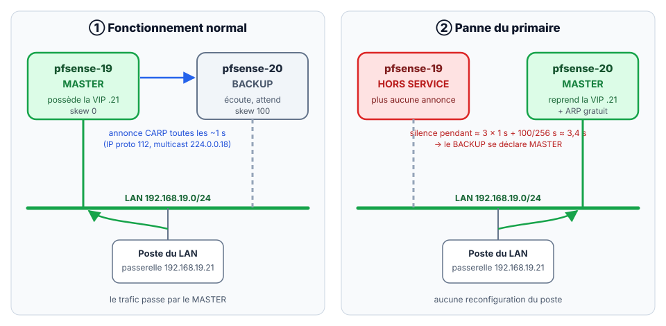
2.4 Les trois protocoles du cluster¶
| Protocole | Ce qu'il synchronise | Transport | Sens | Réseau emprunté |
|---|---|---|---|---|
| CARP (Common Address Redundancy Protocol) | Qui possède les adresses IP virtuelles (MASTER/BACKUP) | Protocole IP n° 112, en multicast vers 224.0.0.18 |
Annonces émises par le MASTER | Les réseaux qui portent une VIP : WAN et LAN |
| pfsync | La table d'états : la liste des connexions en cours | Protocole IP n° 240 | Dans les deux sens | Le lien dédié PFSYNC |
| XML-RPC | La configuration : règles, NAT, VIP, utilisateurs, etc. | HTTPS (TCP 443), vers l'interface web du pair | Uniquement du primaire vers le secondaire | Le lien dédié PFSYNC |
- CARP permet à plusieurs hôtes d'un même réseau de partager une adresse IP. C'est une alternative libre aux protocoles VRRP et HSRP, créée par le projet OpenBSD pour contourner des brevets. En cas de défaillance du primaire, le secondaire reprend l'adresse IP virtuelle de façon transparente.
- pfsync recopie en continu les états des connexions entre les deux pare-feux. Lorsque le primaire tombe, le secondaire connaît déjà les connexions ouvertes et peut les poursuivre sans les couper : c'est le rôle de pfsync, tel que le décrit la documentation de Netgate.
- XML-RPC est un protocole d'appel de procédure à distance (Remote Procedure Call) qui transporte des données XML sur HTTP. pfSense s'en sert pour pousser la configuration du primaire vers le secondaire. Netgate recommande de le faire passer par le même lien dédié que pfsync.
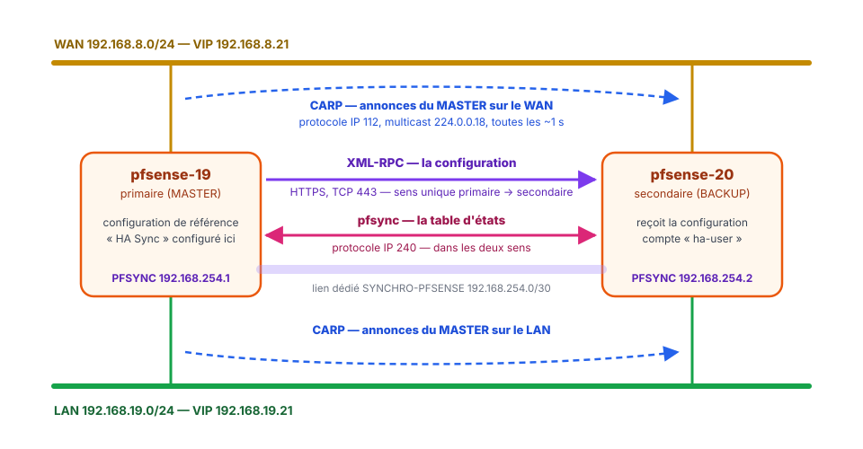
Pourquoi un lien de synchronisation dédié ?
pfsync transmet en clair, en permanence, la liste de toutes les connexions qui traversent le pare-feu. Sur le LAN, n'importe quel poste pourrait écouter ces informations, voire injecter de faux états. Un lien réservé aux deux pare-feux est donc plus sûr. Il est aussi plus fiable, car la synchronisation n'est pas ralentie par le trafic des utilisateurs. À défaut, Netgate tolère l'usage du LAN, mais ce TP applique la bonne pratique.
3. Prérequis¶
Matériel et logiciels
- Un PC avec 8 Go de RAM au minimum, environ 50 Go d'espace disque libre et la virtualisation matérielle (Intel VT-x ou AMD-V) activée dans le BIOS/UEFI.
- Un hyperviseur au choix :
- VMware Workstation Pro : gratuit pour tous les usages depuis novembre 2024. Le téléchargement se fait depuis le portail de support Broadcom, avec un compte gratuit, en choisissant la variante « Personal ». La version 26H1 est la plus récente à la date de rédaction.
- Oracle VirtualBox 7, gratuit.
- L'image ISO de pfSense CE 2.7.2 (voir l'étape 5.1).
- Un accès Internet sur le PC hôte : il est nécessaire pour la mise à jour finale.
Connaissances
- Savoir créer une machine virtuelle.
- Connaître l'adressage IPv4 : adresse, masque, notation CIDR (
/24,/30), passerelle. - Avoir une première idée de ce qu'est une règle de pare-feu et le NAT. L'article Configurer le NAT et le routage avec nftables présente ces notions sous Linux.
Prendre des instantanés
Un instantané (snapshot) enregistre l'état complet d'une VM et permet d'y revenir en un clic. Le TP suggère plusieurs points de sauvegarde (🛟). Ils évitent de tout recommencer après une erreur.
4. Plan d'adressage¶
| Interface pfSense | Rôle | pfsense-19 (primaire) |
pfsense-20 (secondaire) |
VIP partagée | Réseau virtuel |
|---|---|---|---|---|---|
em0 |
WAN — côté extérieur | 192.168.8.19/24 |
192.168.8.20/24 |
192.168.8.21/24 |
VMnet8 (NAT) — passerelle 192.168.8.2 |
em1 |
LAN — réseau interne | 192.168.19.19/24 |
192.168.19.20/24 |
192.168.19.21/24 |
VMnet19 (Host-only) |
em2 |
PFSYNC — synchronisation (ex-OPT1) | 192.168.254.1/30 |
192.168.254.2/30 |
— | LAN segment « SYNCHRO-PFSENSE » |
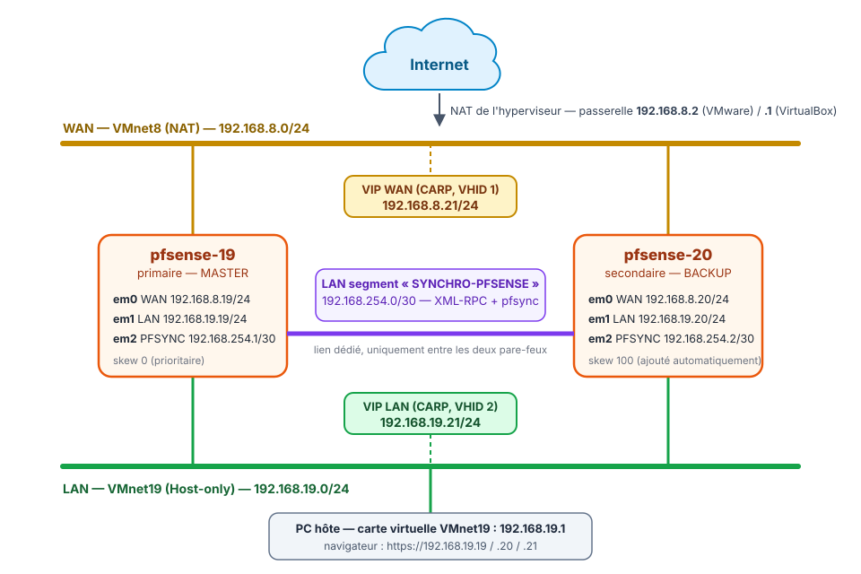
Pourquoi un masque /30 pour la synchronisation ?
Un réseau en /30 (masque 255.255.255.252) contient 4 adresses : 192.168.254.0 (adresse du réseau), .1 et .2 (les deux seules adresses utilisables) et .3 (diffusion). Il ne peut donc y avoir que deux machines sur ce réseau, exactement les deux pare-feux. Personne d'autre ne peut s'y glisser avec une adresse valide.
Pour comparaison, un /29 (masque 255.255.255.248) offre 6 adresses utilisables, et un /24 en offre 254.
Utilisateurs de VirtualBox : une seule différence
D'après la documentation d'Oracle, la passerelle d'un « Réseau NAT » VirtualBox est toujours la première adresse du réseau, soit 192.168.8.1, et ce n'est pas modifiable. Partout où ce TP indique la passerelle ou le DNS 192.168.8.2, utiliser 192.168.8.1 avec VirtualBox. Toutes les autres adresses sont identiques.
5. Préparer l'hyperviseur¶
5.1 Télécharger l'image ISO de pfSense CE 2.7.2¶
Depuis la version 2.8, pfSense CE ne se télécharge plus sous forme d'image ISO autonome. Il faut passer par le Netgate Installer, un installeur en ligne qui exige un compte Netgate et une connexion Internet pendant l'installation. Pour un TP, il est plus simple et plus fiable d'installer la version 2.7.2 depuis une ISO hors ligne, puis de mettre le cluster à jour à la fin (voir la partie 15.3). Cela permet aussi d'apprendre la procédure de mise à jour d'un cluster.
Des sites miroirs hébergent toujours l'ISO 2.7.2 :
- Dakota State University (États-Unis), archive compressée : https://repo.ialab.dsu.edu/pfsense/pfSense-CE-2.7.2-RELEASE-amd64.iso.gz
- Fagskolen Innlandet (Norvège), ISO directe : https://ftp.fagskolen.gjovik.no/pub/pfSense/pfSense-CE-2.7.2-RELEASE-amd64.iso
Un fichier en .iso.gz est une archive compressée : il faut la décompresser pour obtenir le fichier .iso à insérer dans le lecteur CD virtuel. Sous Windows, utiliser 7-Zip (clic droit > 7-Zip > Extraire ici). Sous Linux, utiliser gunzip.
Vérifier l'intégrité du téléchargement permet de s'assurer que le fichier n'a été ni corrompu ni modifié. L'empreinte SHA256 officielle de l'archive pfSense-CE-2.7.2-RELEASE-amd64.iso.gz est :
Résultat attendu
L'empreinte affichée est identique à celle ci-dessus. Si elle diffère, supprimer le fichier et le télécharger à nouveau.
5.2 Créer les réseaux virtuels¶
Le lab utilise trois réseaux :
- WAN : il représente l'extérieur et donne accès à Internet grâce au NAT de l'hyperviseur.
- LAN : il représente le réseau interne de l'entreprise. Le PC hôte y est connecté, ce qui permet d'ouvrir l'interface web des pare-feux depuis son navigateur.
- SYNCHRO-PFSENSE : c'est un « câble virtuel » qui relie uniquement les deux pare-feux.
| Réseau du TP | VMware Workstation | VirtualBox |
|---|---|---|
WAN 192.168.8.0/24 |
VMnet8, type NAT | Réseau NAT (NAT Network) |
LAN 192.168.19.0/24 |
VMnet19, type Host-only | Réseau privé hôte (Host-only) |
SYNCHRO-PFSENSE 192.168.254.0/30 |
LAN segment | Réseau interne (Internal Network) |
- Ouvrir Edit > Virtual Network Editor, puis cliquer sur Change Settings (droits administrateur requis sous Windows).
- Sélectionner VMnet8 (type NAT) et saisir Subnet IP
192.168.8.0et Subnet mask255.255.255.0. - Cliquer sur NAT Settings… et vérifier que Gateway IP vaut
192.168.8.2. C'est la valeur par défaut : l'adresse.1est réservée au PC hôte. - Cliquer sur Add Network…, choisir VMnet19, puis sélectionner Host-only. Saisir Subnet IP
192.168.19.0et le masque255.255.255.0. Laisser cochée l'option Connect a host virtual adapter to this network : le PC hôte reçoit alors l'adresse192.168.19.1sur ce réseau. - Cliquer sur Apply, puis sur OK.
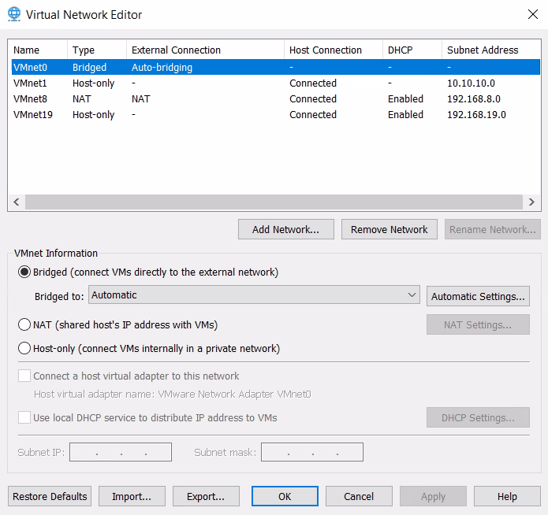
VMware — éditeur de réseaux virtuels : VMnet8 en NAT (192.168.8.0) et VMnet19 en Host-only (192.168.19.0)
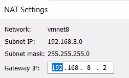
VMware — paramètres NAT de VMnet8 : passerelle 192.168.8.2
Pourquoi changer le sous-réseau de VMnet8 ?
À l'installation, VMware choisit au hasard un sous-réseau pour VMnet8 (par exemple 192.168.153.0/24), différent d'un PC à l'autre. Le fixer à 192.168.8.0/24 permet de suivre le TP à l'identique. L'option DHCP de VMnet19 peut rester active : aucune machine du TP ne l'utilise.
Le réseau SYNCHRO-PFSENSE ne se crée pas ici. C'est un LAN segment, créé depuis les paramètres de la VM (voir l'étape 5.3).
- Ouvrir le Gestionnaire de réseau : Fichier > Outils > Gestionnaire de réseau, ou le volet Outils > Réseau.
- Dans l'onglet Réseaux NAT, cliquer sur Créer. Nommer le réseau
WAN-PFSENSEet saisir le préfixe IPv4192.168.8.0/24. L'option DHCP n'a pas d'importance. La passerelle sera automatiquement192.168.8.1. - Dans l'onglet Réseaux privés hôte, cliquer sur Créer. Choisir Configurer l'adaptateur manuellement avec l'adresse IPv4
192.168.19.1et le masque255.255.255.0. Dans l'onglet Serveur DHCP, décocher Activer le serveur. - Le réseau SYNCHRO-PFSENSE est un réseau interne : il n'a pas besoin d'être créé à l'avance. Il existe dès qu'une carte réseau est rattachée à un réseau interne portant ce nom.
Variante non testée dans le lab de référence
Les manipulations de ce TP ont été réalisées et vérifiées sous VMware Workstation et KVM. Les réglages VirtualBox ci-dessous suivent la documentation d'Oracle et les recommandations de Netgate pour la virtualisation, mais n'ont pas été rejoués dans VirtualBox.
Ne pas utiliser le mode « NAT » simple pour le WAN
En mode NAT (et non Réseau NAT), VirtualBox crée un réseau privé pour chaque VM : les deux pare-feux ne se voient pas côté WAN. Chacun se croit alors seul et se déclare MASTER de la VIP WAN, et le cluster ne peut pas fonctionner. Le mode Réseau NAT place au contraire les deux VM sur le même réseau.
Hôte Linux ou macOS
Sur ces systèmes, VirtualBox n'autorise par défaut que les réseaux privés hôte compris dans 192.168.56.0/21. Pour utiliser 192.168.19.0/24, ajouter la ligne * 192.168.0.0/16 dans le fichier /etc/vbox/networks.conf, à créer s'il n'existe pas.
5.3 Créer les deux machines virtuelles¶
Créer deux VM identiques, nommées pfsense-19 et pfsense-20.
| Paramètre | Valeur | Explication |
|---|---|---|
| Système invité | Other > FreeBSD 14 64-bit (VMware) ou BSD > FreeBSD (64-bit) (VirtualBox) | pfSense 2.7.2 repose sur FreeBSD 14. Si cette version n'est pas proposée, choisir la version 64 bits de FreeBSD la plus récente. |
| Processeur | 1 vCPU | Largement suffisant pour un lab. |
| Mémoire | 1 Go (2 Go si la mise à jour de la partie 15.3 est prévue) | 1 Go est le minimum officiel et suffit pour tout le TP (512 Mo fonctionnent en pratique pour un lab). La mise à jour demande plus : avec 1 Go, elle a échoué faute de mémoire dans le lab de test (voir la partie 15.3). |
| Disque | 20 Go | Le minimum officiel est de 8 Go. |
| Lecteur CD | L'ISO pfSense CE 2.7.2 | — |
| Cartes réseau | 3 cartes, dans cet ordre : WAN, LAN, SYNCHRO-PFSENSE | pfSense les nommera em0, em1 et em2 dans cet ordre. |
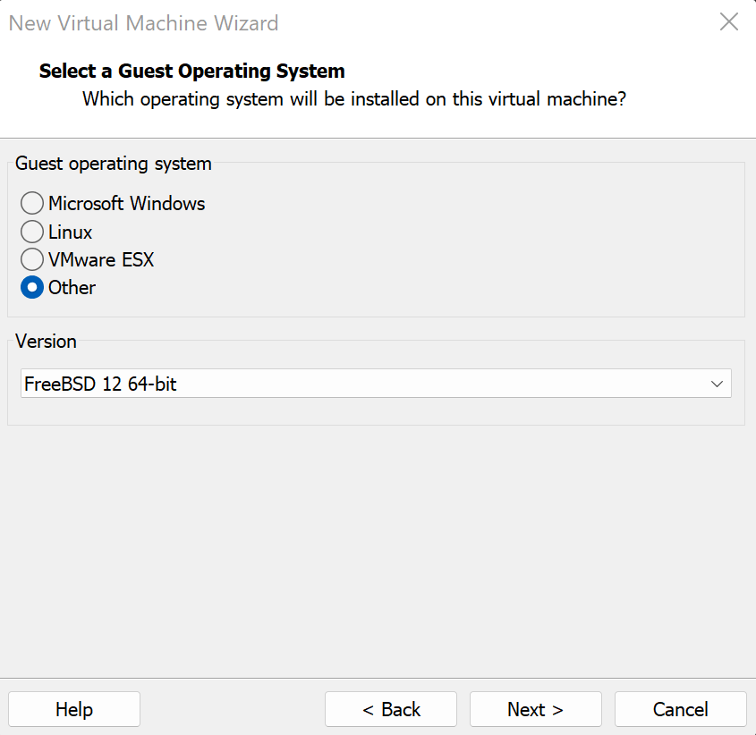
VMware — choix du système invité : Other, puis FreeBSD 64 bits
Dans VM > Settings… > Hardware :
- Network Adapter : Custom >
VMnet8 (NAT); - Network Adapter 2 (bouton Add… > Network Adapter) : Custom >
VMnet19; - Network Adapter 3 : choisir LAN segment, cliquer sur LAN Segments… > Add, nommer le segment
SYNCHRO-PFSENSE, valider, puis le sélectionner dans la liste.
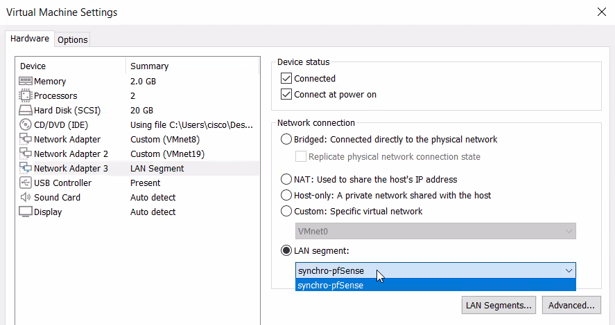
VMware — 3ᵉ carte réseau reliée au LAN segment de synchronisation
Qu'est-ce qu'un LAN segment ?
Un LAN segment relie entre elles les VM qui y sont connectées, comme un switch privé, sans passer par le Virtual Network Editor.
- Contrairement à un VMnet, il ne crée aucune carte réseau virtuelle sur le PC hôte et ne fournit aucun service DHCP. Il faut donc obligatoirement définir des adresses IP statiques dans chaque VM, ici dans pfSense.
- Il accepte n'importe quel masque, dont le
/30. Un VMnet, lui, est aussi relié au PC hôte : le réseau de synchronisation ne serait plus réservé aux deux pare-feux. De plus, VMware déconseille de modifier le masque des VMnets, et les tests menés sous VMware Workstation n'ont pas permis d'y descendre en dessous d'un/29(6 hôtes).
Variante non rejouée dans le lab de test : voir la remarque de l'étape 5.2.
Dans Configuration > Réseau :
| Carte | Mode d'accès réseau | Nom |
|---|---|---|
| Adapter 1 | Réseau NAT | WAN-PFSENSE |
| Adapter 2 | Réseau privé hôte | l'adaptateur créé en 192.168.19.1 |
| Adapter 3 | Réseau interne | SYNCHRO-PFSENSE (saisir le nom) |
Pour chacune des trois cartes, déplier Avancé et régler :
- Type d'interface :
Intel PRO/1000 MT Desktop (82540EM). pfSense nommera alors les interfacesem0,em1etem2, comme dans ce TP. - Mode Promiscuité : Tout autoriser (Allow All). CARP utilise une adresse MAC virtuelle (
00:00:5e:00:01:xx). Sans ce réglage, VirtualBox rejette les trames destinées à cette adresse et la bascule échoue. C'est la recommandation officielle de Netgate pour la virtualisation.
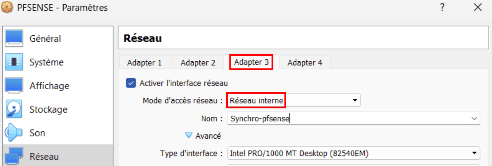
VirtualBox — 3ᵉ carte en « Réseau interne » dédié à la synchronisation
Installation automatique
Si l'assistant de VirtualBox propose une « installation sans surveillance » (unattended installation), la désactiver : pfSense s'installe manuellement.
Ne pas modifier les adresses MAC des cartes réseau
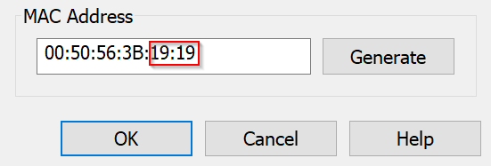
VMware — champ MAC Address d'une carte réseau : à laisser tel quel
Il peut être tentant de personnaliser l'adresse MAC de chaque carte (VM > Settings… > Network Adapter > Advanced > MAC Address), pour reconnaître le réseau d'une interface à la lecture de son adresse. En pratique, cela s'est révélé source de problèmes réseau dans certains cas. Laisser les adresses générées par l'hyperviseur.
Vérifier l'ordre des interfaces
La synchronisation XML-RPC recopie les règles interface par interface. Netgate exige donc que les interfaces soient affectées dans le même ordre sur les deux nœuds : em0 = WAN, em1 = LAN, em2 = PFSYNC. Si une VMware récente nomme les interfaces vmx0, vmx1, vmx2 (carte de type vmxnet3), ce n'est pas grave : il suffit d'adapter les noms en respectant le même ordre sur les deux pare-feux.
6. Installer pfSense sur les deux VM¶
Réaliser cette installation sur les deux VM. Elles peuvent être installées en parallèle.
-
Démarrer la VM sur l'ISO. Sur l'écran Copyright and Trademark Notices, valider Accept avec Enter.
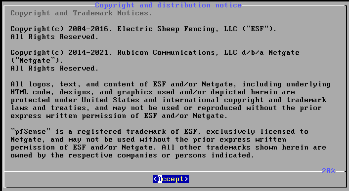
Installeur — écran de copyright : Accept
-
Sur l'écran Welcome to pfSense!, choisir Install — Install pfSense, puis OK.
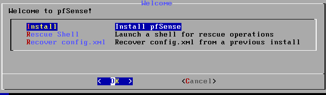
Installeur — choisir Install pfSense
-
Sur l'écran de partitionnement (How would you like to partition your disk?), choisir Auto (ZFS) — Guided Root-on-ZFS, puis OK.
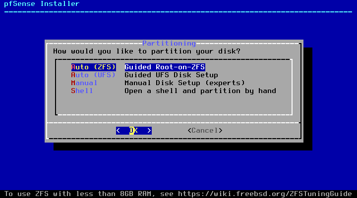
Installeur 2.7.2 — partitionnement : Auto (ZFS)
ZFS ou UFS ?
ZFS est un système de fichiers moderne qui résiste mieux aux coupures de courant brutales. C'est le choix par défaut depuis pfSense 2.6. Le message « To use ZFS with less than 8GB RAM… » est purement informatif : il ne pose aucun problème dans ce lab. Selon la version de l'installeur, l'ordre des options peut varier, ou un écran de choix du clavier (Keymap Selection) peut apparaître avant. Dans ce cas, garder le clavier par défaut.
-
Le menu ZFS Configuration s'affiche. Descendre sur T — Pool Type/Disks et valider avec Enter.
-
Choisir stripe — No Redundancy. La VM n'a qu'un disque : la redondance n'aurait aucun sens.
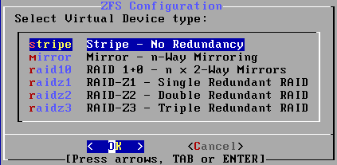
Type de pool ZFS : stripe
-
Cocher le disque
da0avec la barre d'espace (une étoile[*]apparaît), puis valider OK.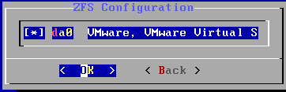
Sélection du disque da0 avec la barre d'espace
-
De retour au menu, la ligne indique stripe: 1 disk. Remonter sur >>> Install — Proceed with Installation et valider.
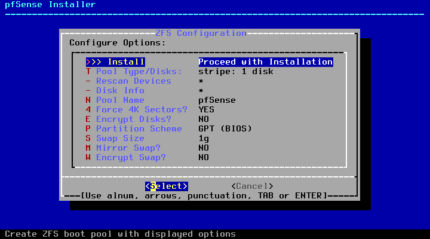
Menu ZFS Configuration : stripe sur 1 disque, prêt pour Install
-
Sur l'avertissement Last Chance!, choisir YES (flèche gauche, puis Enter). Le disque virtuel est vide, rien n'est perdu.
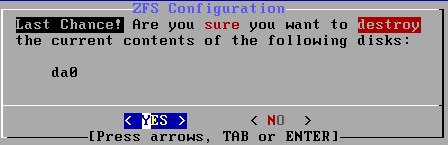
Dernière confirmation avant l'effacement du disque : YES
-
Patienter pendant la vérification et l'extraction des fichiers (une à deux minutes).
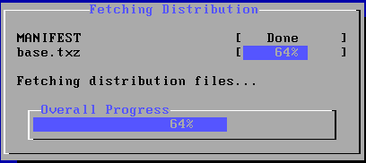
Extraction des fichiers
-
Sur l'écran Complete, choisir Reboot.
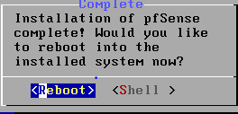
Fin de l'installation : Reboot
Éjecter l'ISO
Si la VM redémarre sur l'installeur au lieu du système installé, éteindre la VM, déconnecter le lecteur CD (VMware : décocher Connected et Connect at power on ; VirtualBox : Retirer le disque du lecteur virtuel), puis la redémarrer.
🛟 Point de sauvegarde : prendre un instantané des deux VM, nommé « Installation terminée ».
7. Configuration initiale en console¶
Au premier démarrage, pfSense affiche un menu numéroté dans la console de la VM. Le clavier y est en QWERTY : voir l'annexe 16.7 pour passer en AZERTY.
7.1 Affecter les interfaces (option 1)¶
pfSense attribue automatiquement em0 au WAN et em1 au LAN, mais pas em2. L'option 1) Assign Interfaces permet de tout affecter explicitement, dans le même ordre sur les deux pare-feux.
Sur les deux pare-feux : saisir 1, puis répondre aux questions.
| Question affichée | Réponse | Explication |
|---|---|---|
Should VLANs be set up now [y\|n]? |
n |
Pas de VLAN dans ce TP. |
Enter the WAN interface name… |
em0 |
Première carte = VMnet8 (NAT). |
Enter the LAN interface name… |
em1 |
Deuxième carte = VMnet19. |
Enter the Optional 1 interface name… |
em2 |
Troisième carte = LAN segment SYNCHRO-PFSENSE. Elle s'appellera OPT1 jusqu'à son renommage en PFSYNC. |
Enter the Optional 2 interface name… |
Enter (vide) | Plus d'autre carte. |
Do you want to proceed [y\|n]? |
y |
— |
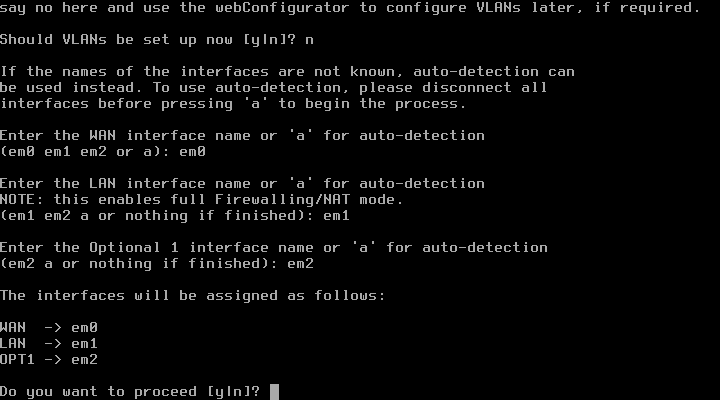
Console — affectation des interfaces : WAN em0, LAN em1, OPT1 em2
7.2 Donner son adresse IP au LAN (option 2)¶
L'adresse LAN par défaut, 192.168.1.1, n'est pas dans le réseau du PC hôte (192.168.19.0/24). Il faut la changer pour pouvoir ouvrir l'interface web.
Sur chaque pare-feu : saisir 2, puis 2 pour choisir l'interface LAN.
| Question affichée | pfsense-19 |
pfsense-20 |
Explication |
|---|---|---|---|
Configure IPv4 address LAN interface via DHCP? (y/n) |
n |
n |
Un pare-feu a une adresse fixe. |
Enter the new LAN IPv4 address |
192.168.19.19 |
192.168.19.20 |
— |
Enter the new LAN IPv4 subnet bit count |
24 |
24 |
Masque 255.255.255.0. |
For a WAN, enter the new LAN IPv4 upstream gateway address |
Enter | Enter | Pas de passerelle sur un LAN. |
Configure IPv6 address LAN interface via DHCP6? (y/n) |
n |
n |
Pas d'IPv6 dans ce TP. |
Enter the new LAN IPv6 address |
Enter | Enter | — |
Do you want to enable the DHCP server on LAN? (y/n) |
n |
n |
Deux serveurs DHCP sur le même réseau se feraient concurrence. |
Do you want to revert to HTTP as the webConfigurator protocol? (y/n) |
n |
n |
On garde HTTPS, chiffré. |
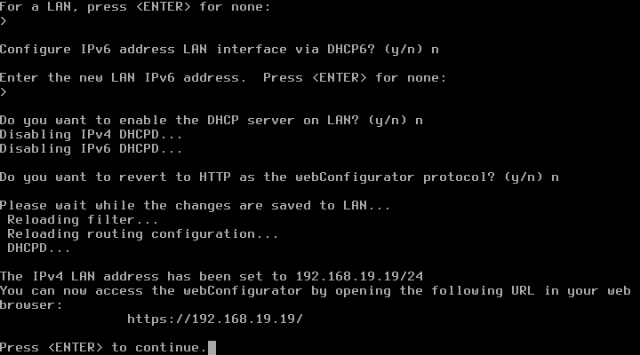
Console — fin de la configuration de l'adresse LAN du primaire
Vérification
Depuis le PC hôte, la commande ping 192.168.19.19 puis ping 192.168.19.20 doit recevoir des réponses. Si ce n'est pas le cas, vérifier que la 2e carte de la VM est bien dans VMnet19 (ou dans le réseau privé hôte de VirtualBox).
8. Premier accès web et assistant de configuration¶
8.1 Se connecter à l'interface web¶
Depuis le navigateur du PC hôte, ouvrir https://192.168.19.19 pour le primaire et https://192.168.19.20 pour le secondaire.
Le navigateur affiche un avertissement de sécurité. C'est normal : pfSense utilise un certificat auto-signé, qu'aucune autorité reconnue n'a signé. La connexion est bien chiffrée, mais le navigateur ne peut pas garantir l'identité du site. Dans un lab, cliquer sur Paramètres avancés > Continuer vers le site.
L'identifiant et le mot de passe par défaut sont admin / pfsense (documentation officielle de Netgate).
8.2 Suivre l'assistant de configuration (Setup Wizard)¶
L'assistant démarre automatiquement à la première connexion. Le réaliser sur les deux pare-feux avec les valeurs suivantes, en cliquant sur Next à chaque page.
| Page de l'assistant | Champ | pfsense-19 |
pfsense-20 |
|---|---|---|---|
| Netgate Global Support | — | Next | Next |
| General Information | Hostname | pfsense-19 |
pfsense-20 |
| Domain | home.arpa |
home.arpa |
|
| Primary DNS Server | 192.168.8.2 (VirtualBox : .1) |
idem | |
| Time Server Information | Timezone | Europe/Paris |
Europe/Paris |
| Configure WAN Interface | SelectedType | Static |
Static |
| IP Address / Subnet Mask | 192.168.8.19 / 24 |
192.168.8.20 / 24 |
|
| Upstream Gateway | 192.168.8.2 (VirtualBox : .1) |
idem | |
| Block RFC1918 Private Networks | décoché | décoché | |
| Block bogon networks | coché (par défaut) | coché | |
| Configure LAN Interface | LAN IP Address / Subnet Mask | 192.168.19.19 / 24 |
192.168.19.20 / 24 |
| Set Admin WebGUI Password | Admin Password | un mot de passe robuste | le même que sur le primaire |
| Reload configuration | — | Reload | Reload |
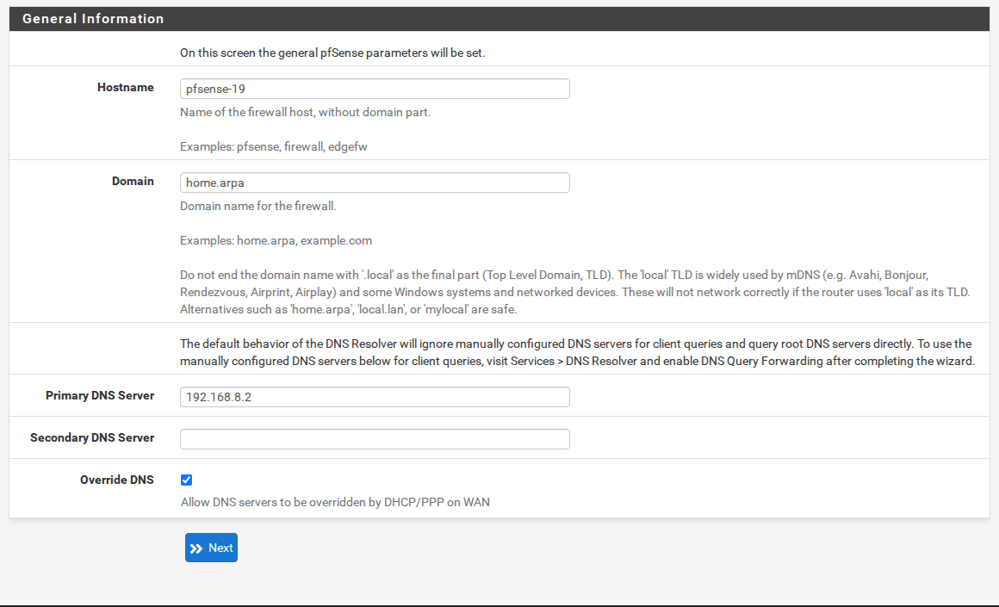
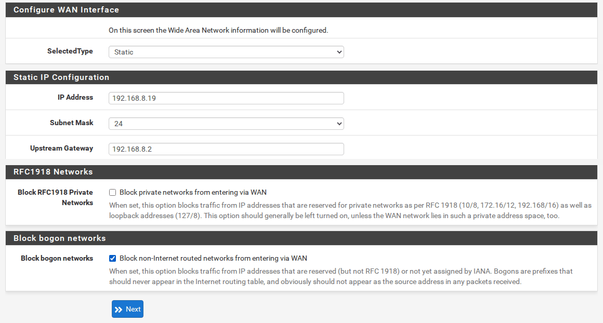
Pourquoi décocher « Block RFC1918 Private Networks » ?
Cette option bloque, à l'entrée du WAN, tout trafic provenant d'une adresse privée (10.0.0.0/8, 172.16.0.0/12, 192.168.0.0/16). Sur une vraie connexion Internet, c'est une bonne protection : aucune adresse privée ne devrait arriver d'Internet. Mais dans ce lab, le WAN lui-même est un réseau privé (192.168.8.0/24), et le texte d'aide de pfSense le précise : « This option should generally be left turned on, unless the WAN network lies in such a private address space, too ». Laissée cochée, l'option bloquerait toute connexion initiée depuis le WAN du lab, par exemple l'accès à l'interface web par le WAN décrit en annexe 16.5.
Elle ne gêne en revanche ni CARP ni l'accès à Internet. Le lab de test l'a vérifié : la règle automatique qui autorise CARP passe avant ce blocage, et les réponses aux connexions sortantes sont acceptées grâce à la table d'états.
Ne pas relancer l'assistant sur un pare-feu déjà configuré
L'assistant reste accessible dans System > Setup Wizard, mais il ne sert qu'à la première configuration. Dans le lab de test, rouvrir l'assistant sur un pare-feu en service et cliquer sur Next à une seule étape, sans aller jusqu'au bout, a suffi à effacer l'adresse IP du WAN dans la configuration. La panne n'est apparue qu'au redémarrage suivant, ce qui la rend difficile à diagnostiquer. Pour modifier un réglage ensuite, passer par le menu concerné, par exemple Interfaces > WAN.
Pourquoi le même mot de passe admin sur les deux nœuds ?
L'option Synchronize admin, activée à l'étape 10.2, recopiera de toute façon le compte admin du primaire vers le secondaire. Choisir le même mot de passe dès maintenant évite toute confusion.
8.3 Configurer l'interface de synchronisation (OPT1 → PFSYNC)¶
Sur chaque pare-feu, ouvrir Interfaces > OPT1, puis :
| Champ | pfsense-19 |
pfsense-20 |
|---|---|---|
| Enable | coché | coché |
| Description | PFSYNC |
PFSYNC |
| IPv4 Configuration Type | Static IPv4 |
Static IPv4 |
| IPv4 Address | 192.168.254.1 / 30 |
192.168.254.2 / 30 |
| IPv4 Upstream gateway | None |
None |
Cliquer sur Save, puis sur Apply Changes.
Pourquoi « None » comme passerelle ?
Une passerelle (gateway) sert à joindre des réseaux lointains. Le lien de synchronisation ne mène nulle part ailleurs : les deux pare-feux sont directement reliés, une passerelle y serait inutile.
8.4 Distinguer les deux pare-feux d'un coup d'œil¶
Pour ne pas confondre les deux interfaces web, ouvertes côte à côte dans le navigateur :
- Sur le primaire : dans System > General Setup (Système > Configuration générale), régler Language sur Français et Theme sur pfSense-dark, puis Save.
- Sur le secondaire : laisser l'anglais et le thème clair.
Ces réglages appartiennent à System > General Setup, qui n'est jamais synchronisé : ils resteront différents même une fois la synchronisation active.
État attendu des consoles
Une fois les interfaces configurées, la console de chaque pare-feu affiche ses trois adresses.
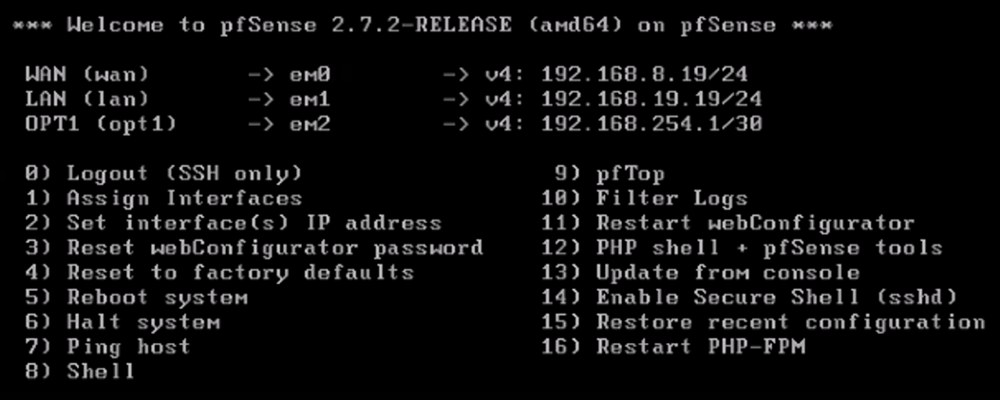
Console du primaire, interfaces configurées
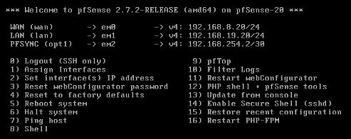
Console du secondaire, interfaces configurées
9. Tester la connectivité entre les deux pare-feux¶
Sur une interface optionnelle comme PFSYNC, pfSense bloque tout le trafic entrant par défaut tant qu'aucune règle ne l'autorise. C'est le principe du refus par défaut : tout ce qui n'est pas explicitement autorisé est interdit. Le premier test consiste à autoriser le ping du secondaire vers le primaire.
Sur le primaire, ouvrir Firewall > Rules > PFSYNC (Pare-feu > Règles > PFSYNC), cliquer sur Add, puis renseigner :
| Champ | Valeur |
|---|---|
| Action | Pass (Autoriser) |
| Interface | PFSYNC |
| Address Family | IPv4 |
| Protocol | ICMP — sous-type any (tout) |
| Source | Address or Alias : 192.168.254.2 (le secondaire) |
| Destination | Address or Alias : 192.168.254.1 (le primaire) |
Cliquer sur Save, puis sur Apply Changes (Appliquer les modifications). Tant que ce bouton n'est pas cliqué, la règle est enregistrée mais pas active.
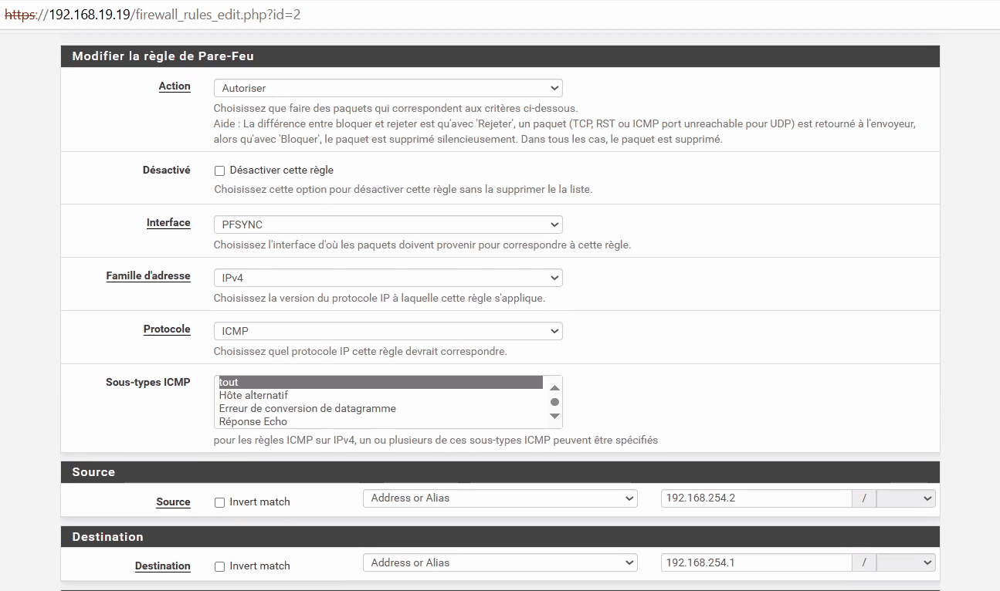
Primaire — règle ICMP sur PFSYNC, de 192.168.254.2 vers 192.168.254.1
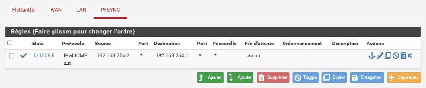
Primaire — la règle ICMP dans la liste des règles PFSYNC
Sur le secondaire, ouvrir Diagnostics > Ping, puis saisir Hostname 192.168.254.1, Source address PFSYNC et cliquer sur Ping.
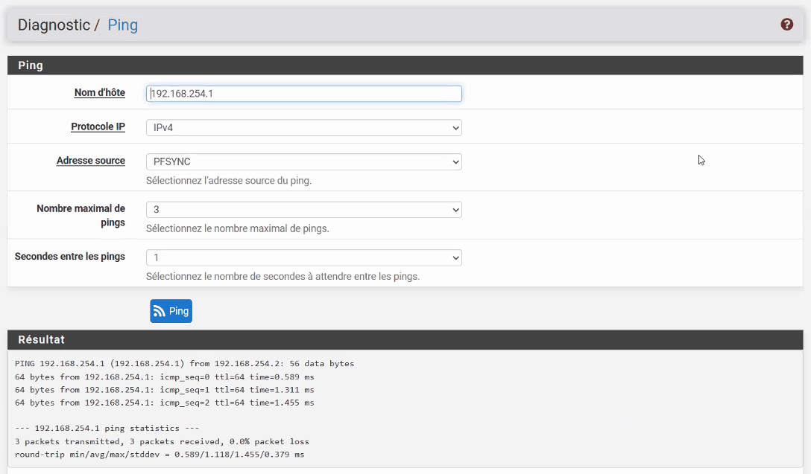
Secondaire — ping de 192.168.254.1 depuis l'interface PFSYNC : 0 % de perte
Pourquoi créer la règle sur le primaire, alors que le ping part du secondaire ?
Réponse
Une règle de pare-feu pfSense s'applique aux paquets qui entrent par une interface. Le ping (echo request) sort du secondaire, ce qui est toujours autorisé, puis entre dans le primaire par son interface PFSYNC : c'est le primaire qui doit l'accepter. La réponse (echo reply) revient ensuite automatiquement, grâce à la table d'états.
Ce fonctionnement a été vérifié dans le lab de test : avec la règle sur le secondaire uniquement, on obtient 100 % de perte ; avec la règle sur le primaire, 0 % de perte.
En cas d'échec du ping
Si le ping ne passe toujours pas, autoriser l'ensemble du réseau PFSYNC subnets en source et en destination, au lieu des deux adresses, sur les deux pare-feux. Cette modification a réglé le problème dans certains cas.
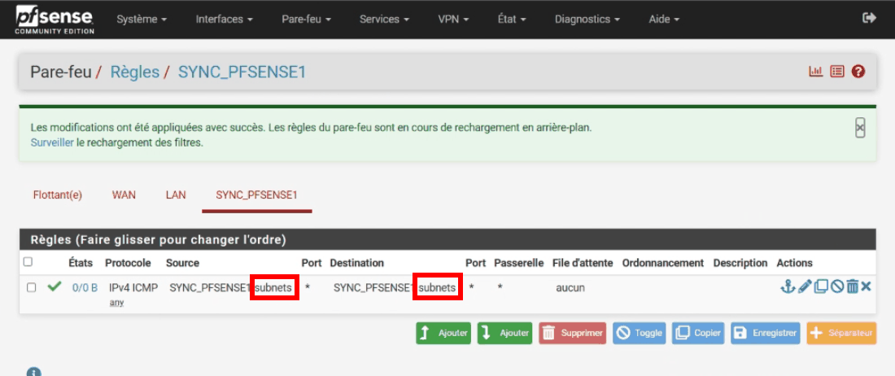
Variante de dépannage : ICMP autorisé entre PFSYNC subnets
Vérifier aussi l'accès à Internet (indispensable pour la mise à jour finale) : sur chaque pare-feu, dans Diagnostics > Ping, pinguer 192.168.8.2 (la passerelle), puis 1.1.1.1, avec Source address WAN.
🛟 Point de sauvegarde : prendre un instantané « Configuration de base ».
10. Configurer la synchronisation haute disponibilité¶
10.1 Créer un utilisateur dédié à la synchronisation¶
Le primaire doit s'authentifier auprès du secondaire pour lui envoyer la configuration. Plutôt que d'utiliser le compte admin, on crée un compte dédié. C'est une bonne pratique : ce compte sert à une seule tâche, et il peut être désactivé ou changé sans toucher au compte d'administration.
Sur le secondaire :
- Ouvrir System > User Manager (Système > Gestionnaire d'usagers) et cliquer sur Add.
- Saisir Username
ha-useret un mot de passe robuste, puis cliquer sur Save. -
Modifier à nouveau l'utilisateur (icône crayon) : la section Effective Privileges n'apparaît qu'après le premier enregistrement.
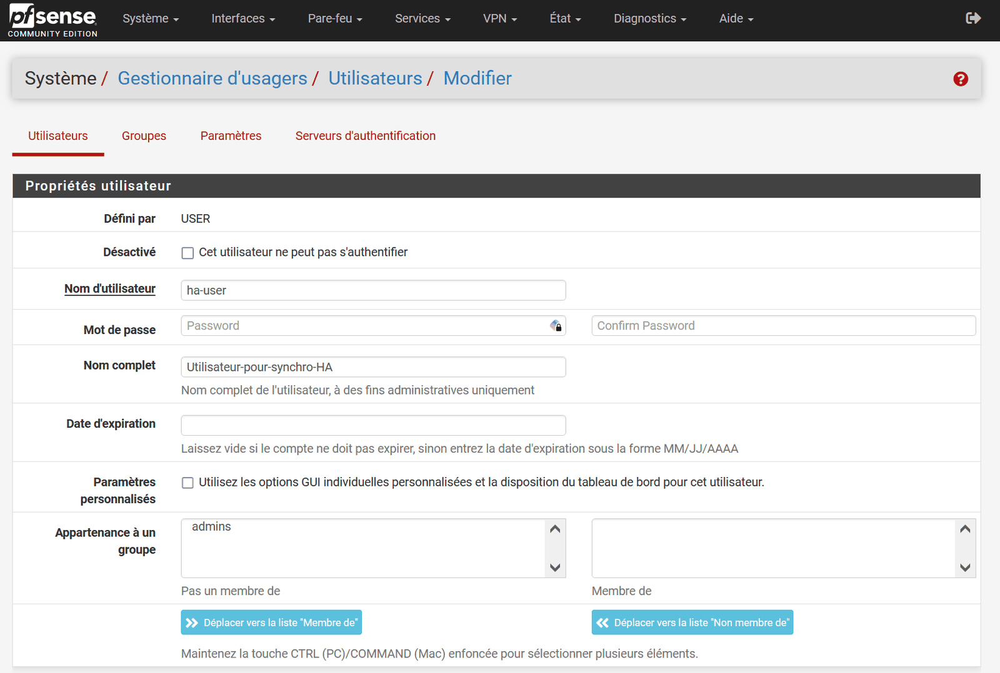
Création de l'utilisateur ha-user
-
Dans Effective Privileges, cliquer sur Add, sélectionner System - HA node sync (Système – Synchronisation du nœud du Système HA), puis enregistrer.
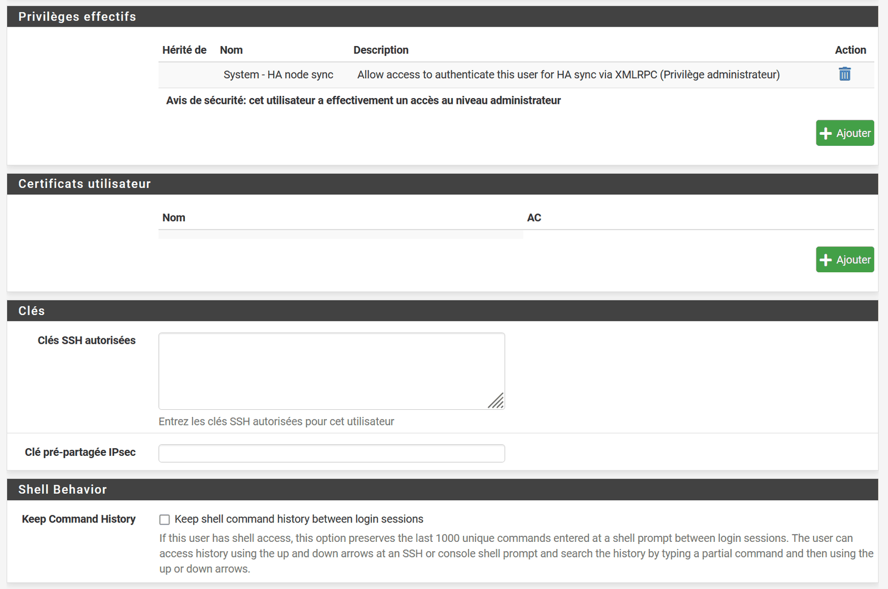
Privilège System - HA node sync attribué à ha-user
Un compte à protéger
pfSense le signale lui-même : ce privilège donne en pratique un accès équivalent à celui d'un administrateur, puisqu'il permet de remplacer la configuration. Le mot de passe de ha-user doit donc être aussi robuste que celui d'admin.
Sur le primaire, créer le même utilisateur, avec le même nom, le même mot de passe et le même privilège.
Pourquoi créer aussi ha-user sur le primaire, alors que c'est le secondaire qui reçoit les connexions ?
Réponse
La synchronisation XML-RPC ne fusionne pas les configurations : elle remplace des sections entières du secondaire par celles du primaire. C'est le cas de la liste des utilisateurs, dès que l'option User manager users and groups est cochée.
Si ha-user n'existait que sur le secondaire, la première synchronisation supprimerait ce compte, absent du primaire, et toutes les synchronisations suivantes échoueraient faute d'authentification. Le cluster se « casserait » lui-même.
10.2 Paramétrer la synchronisation sur le primaire¶
Sur le primaire uniquement, ouvrir System > High Avail. Sync. La page s'intitule High Availability ; en français, le menu s'appelle Système > High Availability.
| Section | Champ | Valeur | Rôle |
|---|---|---|---|
| State Synchronization Settings (pfsync) | Synchronize states | coché | Envoie la table d'états au pair. |
| Synchronize Interface | PFSYNC |
Lien dédié. | |
| Filter Host ID | vide | Identifiant unique généré automatiquement. | |
| pfsync Synchronize Peer IP | 192.168.254.2 |
Envoi direct au secondaire, plutôt qu'en multicast. | |
| Configuration Synchronization Settings (XMLRPC Sync) | Synchronize Config to IP | 192.168.254.2 |
Adresse PFSYNC du secondaire. |
| Remote System Username | ha-user |
— | |
| Remote System Password | mot de passe de ha-user |
— | |
| Synchronize admin | coché | Recopie aussi le compte admin, mot de passe compris. |
|
| Select options to sync | Toggle All (tout cocher) | Règles, NAT, VIP, utilisateurs, etc. |
Cliquer sur Save.
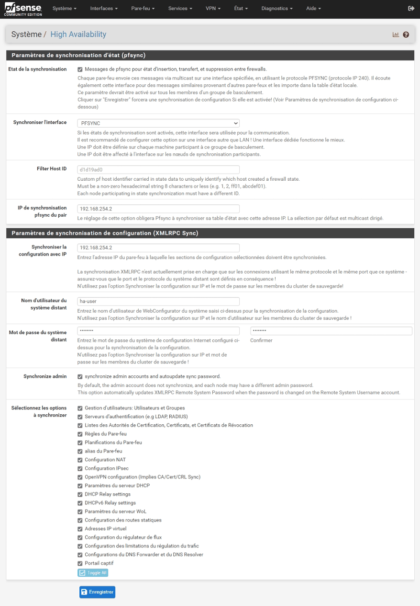
Primaire — page High Availability entièrement renseignée
Il n'est pas nécessaire de configurer la partie XML-RPC sur le secondaire : la réplication de la configuration du primaire s'effectuera dès que les flux seront autorisés des deux côtés.
10.3 Autoriser les flux de synchronisation¶
Pour respecter les bonnes pratiques de sécurité, on n'autorise que les adresses, ports et protocoles strictement nécessaires à la synchronisation, et rien de plus. La configuration se fait dans Firewall > Rules > PFSYNC.
Règle 1 — XML-RPC, pour la synchronisation de la configuration¶
Sur le primaire, cliquer sur Add et créer la règle suivante :
| Champ | Valeur | Explication |
|---|---|---|
| Action | Pass |
— |
| Interface | PFSYNC |
Interface dédiée à la réplication. |
| Address Family | IPv4 |
— |
| Protocol | TCP |
XML-RPC voyage dans une connexion HTTPS. |
| Source | PFSYNC subnets |
Tout le réseau 192.168.254.0/30 : il ne contient que les deux pare-feux. |
| Destination | PFSYNC subnets |
Même raisonnement. |
| Destination Port Range | HTTPS (443) |
Port de l'interface web, qui reçoit les appels XML-RPC. |
| Description | autoriser la synchro de configuration XML-RPC |
Une règle décrite est une règle compréhensible six mois plus tard. |
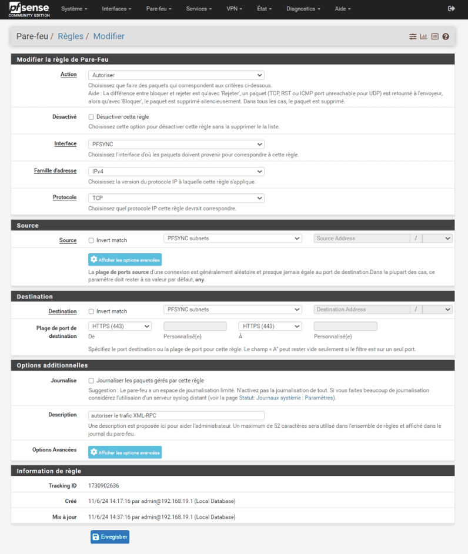
Règle XML-RPC : TCP 443 de PFSYNC subnets vers PFSYNC subnets
Pourquoi « PFSYNC subnets » plutôt qu'une adresse IP ?
La règle va être recopiée telle quelle sur le secondaire. Avec une adresse propre à un nœud (par exemple « destination 192.168.254.1 »), la copie serait fausse sur l'autre nœud, puisque la règle ne serait pas adaptée à sa situation. PFSYNC subnets désigne le réseau /30, valable sur les deux pare-feux. Un alias contenant les deux adresses 192.168.254.1 et 192.168.254.2 conviendrait aussi.
Ensuite, créer exactement la même règle sur le secondaire.
Pourquoi faire cette règle sur le secondaire également ?
Réponse
Le primaire envoie son flux XML-RPC vers le secondaire. Ce flux entre donc par l'interface PFSYNC du secondaire. Sans règle l'autorisant sur le secondaire, il est bloqué (refus par défaut) et la synchronisation ne s'effectue pas.
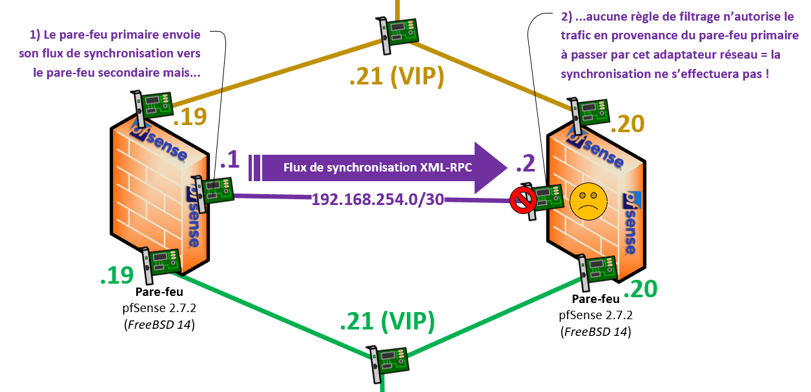
Sans règle sur le secondaire, le flux XML-RPC est bloqué à son entrée
Pourquoi ne pas avoir commencé par la règle sur le secondaire, alors ?
Réponse
Parce que la configuration du primaire est la référence. Dès que la synchronisation fonctionne, les règles du secondaire sont remplacées par celles du primaire.
Si la règle XML-RPC n'existait que sur le secondaire, la première synchronisation l'effacerait, puisqu'elle est absente de la configuration de référence, et toutes les synchronisations suivantes seraient bloquées. En la créant d'abord sur le primaire, on garantit qu'elle fait partie de la configuration recopiée : le secondaire reçoit une copie identique de sa propre règle et la synchronisation se maintient.
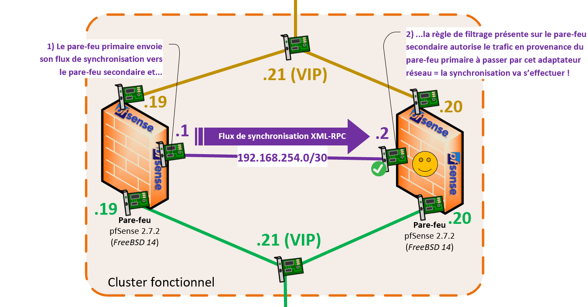
Avec la règle sur le secondaire, la synchronisation fonctionne
Une fois la règle XML-RPC créée sur le secondaire, la configuration se réplique. Pour une vérification rapide, il est possible de forcer la synchronisation, uniquement depuis le primaire, dans Status > Filter Reload (État > Recharger les filtres) avec le bouton Force Config Sync.
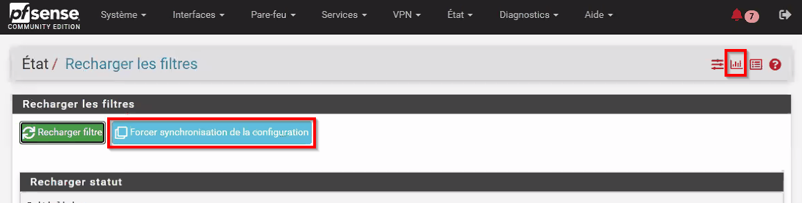
Primaire — État > Recharger les filtres : synchronisation forcée
Règle 2 — pfsync, pour la synchronisation des états¶
Retourner sur le primaire et créer une deuxième règle :
| Champ | Valeur |
|---|---|
| Action | Pass |
| Interface | PFSYNC |
| Address Family | IPv4 |
| Protocol | PFSYNC |
| Source | PFSYNC subnets |
| Destination | PFSYNC subnets |
| Description | autoriser la synchro des états pfsync |
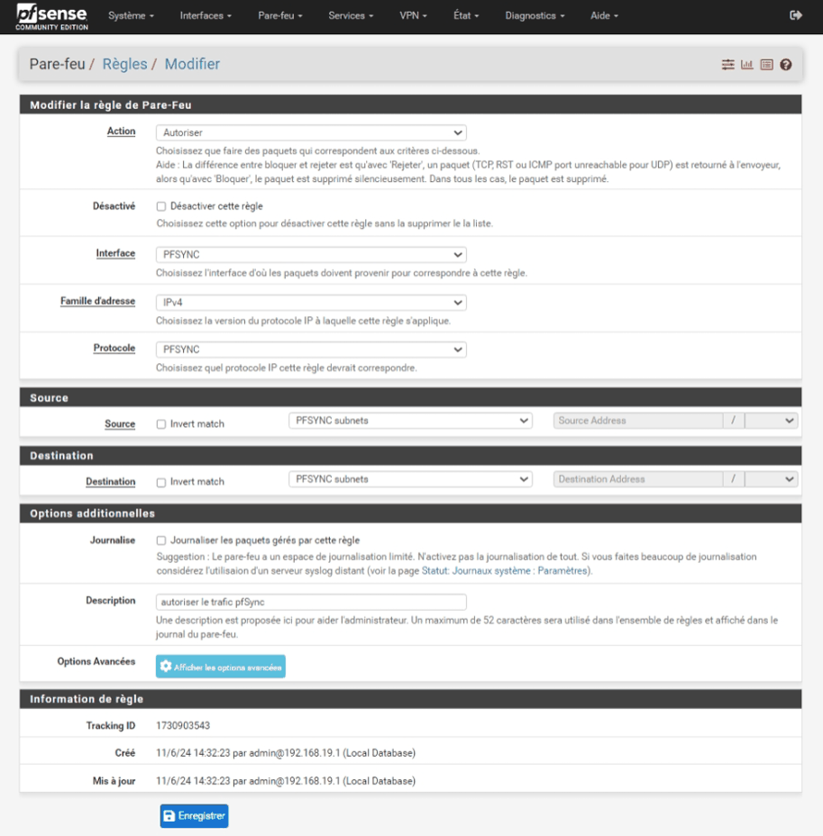
Règle pfsync : protocole PFSYNC entre PFSYNC subnets
Règle 3 — CARP¶
Toujours sur le primaire, créer une troisième règle sur le même modèle, avec le protocole CARP.
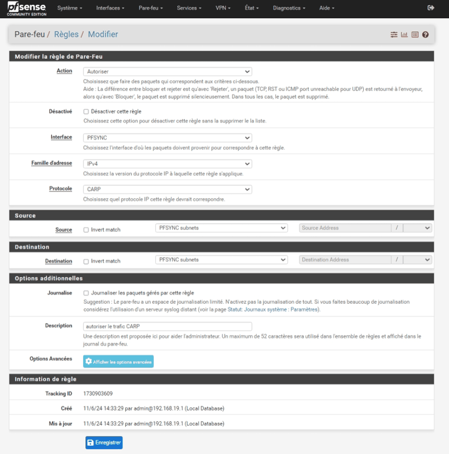
Règle CARP : protocole CARP entre PFSYNC subnets
Pour aller plus loin : cette règle est-elle indispensable ?
Dès qu'une VIP CARP existe, pfSense ajoute une règle automatique qui autorise le protocole CARP sur toutes les interfaces. De plus, les annonces CARP circulent sur les réseaux qui portent une VIP (WAN et LAN), pas sur le lien PFSYNC. Cette troisième règle n'est donc pas strictement nécessaire. Elle ne présente aucun risque, puisqu'elle ne concerne que le /30 des deux pare-feux, et elle documente l'intention de la configuration. pfsync, en revanche, n'est jamais autorisé automatiquement : la règle 2 est indispensable.
Ces trois points ont été vérifiés dans le lab de test, en 2.7.2 comme en 2.9.0 :
- la commande
pfctl -sr | grep carp(dans Diagnostics > Command Prompt) affiche la règle automatiquepass quick proto carp all no state; - une capture (
tcpdump -ni em1 ip proto 112) montre les annonces CARP surem0etem1; - sur
em2, on ne voit passer que du pfsync.
Les outils de capture (tcpdump, Wireshark) affichent les paquets CARP comme du VRRPv2 : les deux protocoles utilisent le même numéro, 112.
Après toutes ces manipulations, l'interface PFSYNC du primaire présente ces règles :
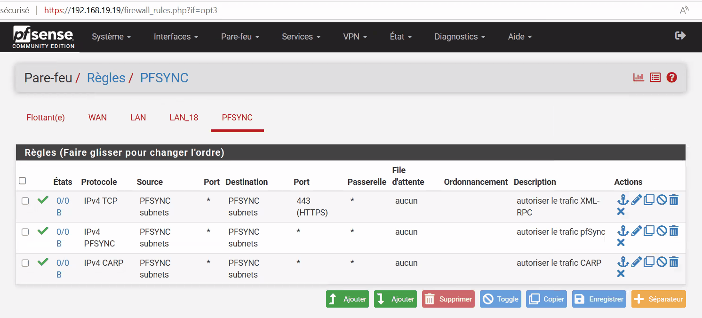
Primaire — règles de l'interface PFSYNC
Ne pas toucher au secondaire : les règles 2 et 3 vont y arriver toutes seules.
10.4 Vérifier la réplication et dépanner¶
Sur le secondaire, ouvrir Firewall > Rules > PFSYNC : les règles 2 et 3 sont apparues automatiquement, grâce à la règle XML-RPC.
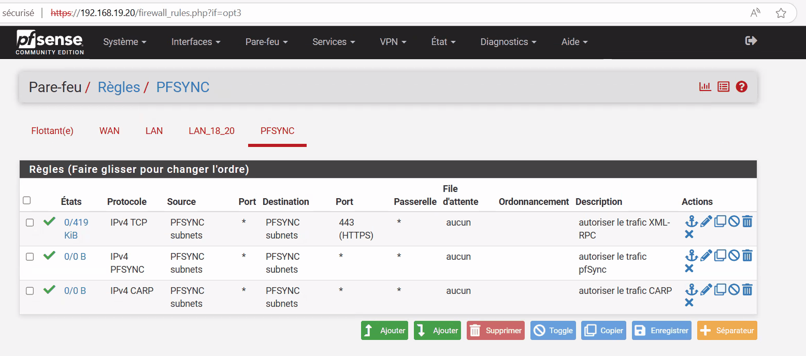
Secondaire — les mêmes règles, arrivées par réplication
En cas de problème de synchronisation, deux outils permettent d'en trouver la cause :
-
Les journaux du pare-feu sur le secondaire : Status > System Logs > Firewall (État > Journaux système > Pare-feu). On y repère le trafic bloqué en provenance de l'interface PFSYNC du primaire. Le bouton + (Easy Rule) crée en un clic une règle qui l'autorise.
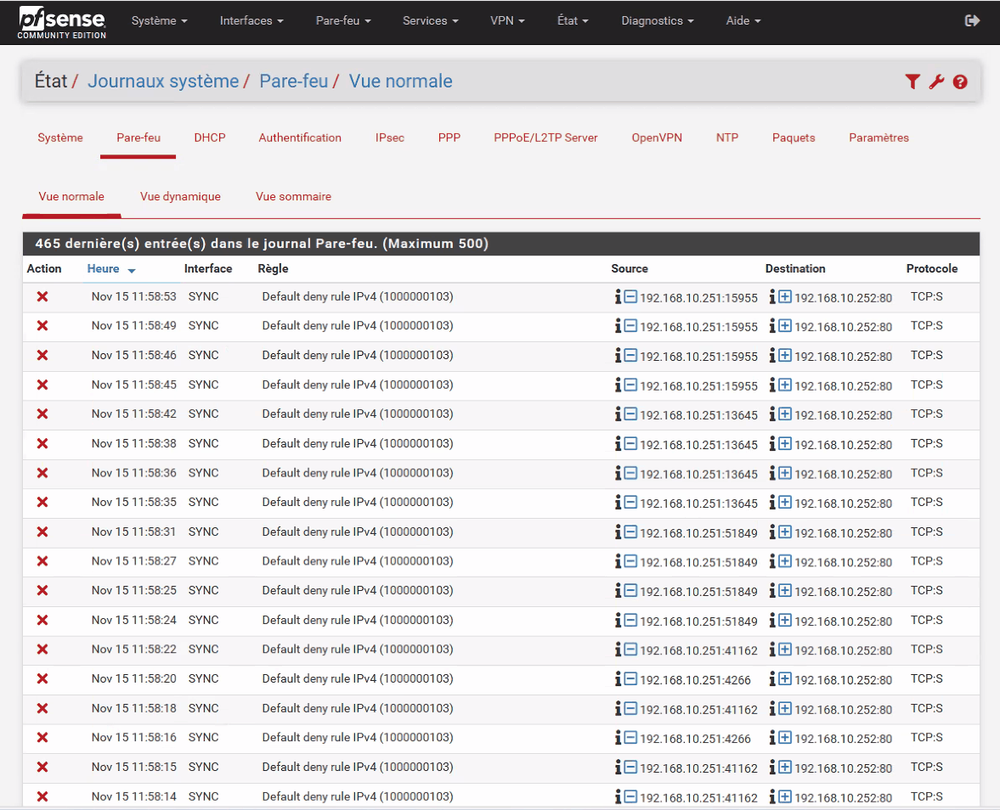
Journaux du pare-feu : trafic de synchronisation bloqué. Capture issue d'un autre lab : l'interface s'y appelle SYNC et les adresses diffèrent, mais la démarche est identique.
-
Les notifications : l'icône en forme de cloche, en haut à droite. Il faut vraiment les lire. Elles signalent par exemple un mauvais mot de passe ou un utilisateur inexistant sur le secondaire.
Test de réplication : sur le primaire, ajouter une règle quelconque, par exemple autoriser le trafic IPv6 sur le LAN. Elle doit apparaître sur le secondaire quelques secondes plus tard. Si ce n'est pas le cas, reprendre attentivement les étapes 10.1 à 10.3.
Sur le secondaire, la page System > High Avail. Sync se présente ainsi :
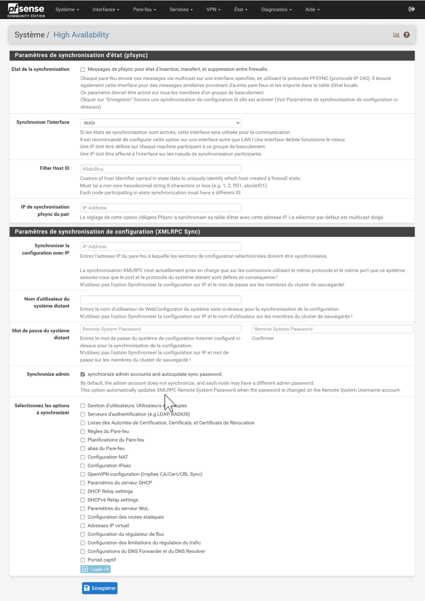
Secondaire — page High Availability : seule l'option Synchronize admin est cochée
Les cases de la partie « XMLRPC Sync » sont décochées sur le secondaire. Faut-il les remplir ?
Réponse
Non. Si les tests précédents sont concluants, il n'y a aucune raison d'y toucher. La synchronisation de configuration est à sens unique et ne doit être configurée que sur le primaire.
La documentation de Netgate est formelle : ces réglages ne doivent être activés que sur le primaire. Renseignés sur le secondaire, ils lui feraient pousser à son tour sa configuration vers le primaire, qui cesserait d'être la référence. Netgate rappelle aussi : « Do not make changes to the secondary in areas set to be synchronized! »
10.5 Activer la réception des états pfsync sur le secondaire¶
Pourquoi cette étape est indispensable
La partie haute de la page HA (State Synchronization Settings, pfsync) n'est pas synchronisée par XML-RPC. Sur le secondaire, la case Synchronize states reste donc décochée.
Dans cette situation, la bascule des VIP fonctionne, mais le secondaire n'importe aucun état envoyé par le primaire : il ne connaîtrait pas les connexions en cours au moment d'une bascule. Le lab de test l'a vérifié : sans cette étape, la table d'états du secondaire ne contenait aucun état créé par le primaire ; après cette étape, elle les contenait. Le texte d'aide de la case le précise d'ailleurs : « This setting should be enabled on all members of a failover group ». La documentation de Netgate demande d'activer pfsync sur chaque nœud, chacun pointant vers l'autre.
Sur le secondaire, ouvrir System > High Avail. Sync et renseigner uniquement la partie haute :
| Champ | Valeur |
|---|---|
| Synchronize states | coché |
| Synchronize Interface | PFSYNC |
| pfsync Synchronize Peer IP | 192.168.254.1 (le primaire) |
| Partie XMLRPC Sync | laisser vide, comme expliqué ci-dessus |
Cliquer sur Save.
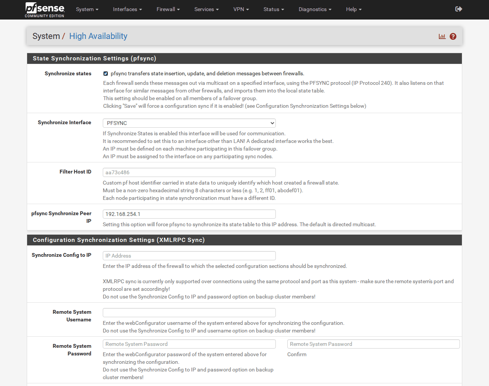
Secondaire — pfsync activé vers 192.168.254.1, partie XML-RPC laissée vide
Vérification (facultative) : le contrôle le plus simple se fait dans l'interface web, à l'étape 13.1, une fois les VIP créées. Dès maintenant, la commande suivante compte les états selon le nœud qui les a créés. Elle se lance dans Diagnostics > Command Prompt (Diagnostics > Invite de commande) de chaque pare-feu, champ Execute Shell Command :
Résultat attendu
Deux identifiants (creatorid) différents apparaissent sur chaque nœud : celui du pare-feu lui-même et celui de son pair. Par exemple, sur le secondaire :
Si un seul identifiant apparaît, les états ne sont pas échangés : vérifier la règle pfsync (règle 2) et la case Synchronize states des deux nœuds.
🛟 Point de sauvegarde : prendre un instantané « Synchronisation HA ».
11. Configurer les adresses IP virtuelles (VIP CARP)¶
Pour que le cluster soit résilient (tolérant à la panne), chaque pare-feu garde sa propre adresse sur chaque interface, mais dispose aussi d'une adresse IP virtuelle partagée. On utilise donc trois adresses par réseau : .19, .20 et .21.
Sur le primaire, ouvrir Firewall > Virtual IPs (Pare-feu > IPs virtuels) et cliquer sur Add.
| Champ | VIP WAN | VIP LAN | Explication |
|---|---|---|---|
| Type | CARP |
CARP |
Les autres types (IP Alias, Proxy ARP) ne basculent pas. |
| Interface | WAN |
LAN |
— |
| Address(es) | 192.168.8.21 / 24 |
192.168.19.21 / 24 |
Le masque est celui du réseau (/24), pas /32. |
| Virtual IP Password | un mot de passe | un mot de passe | Authentifie les annonces CARP entre les membres du groupe. |
| VHID Group | valeur par défaut (1) |
valeur par défaut (2) |
Numéro du groupe CARP (Virtual Host ID). |
| Advertising frequency — Base | 1 |
1 |
Une annonce par seconde. |
| Advertising frequency — Skew | 0 |
0 |
0 = priorité la plus forte, celle du primaire. |
| Description | carp_vip_wan |
carp_vip_lan |
— |
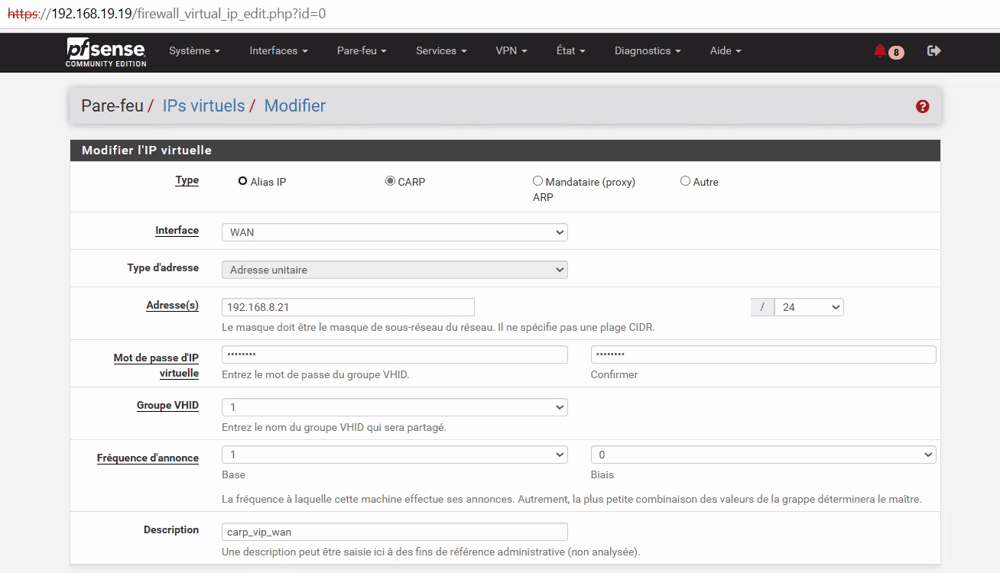
VIP CARP du WAN : 192.168.8.21/24, VHID 1, base 1, skew 0
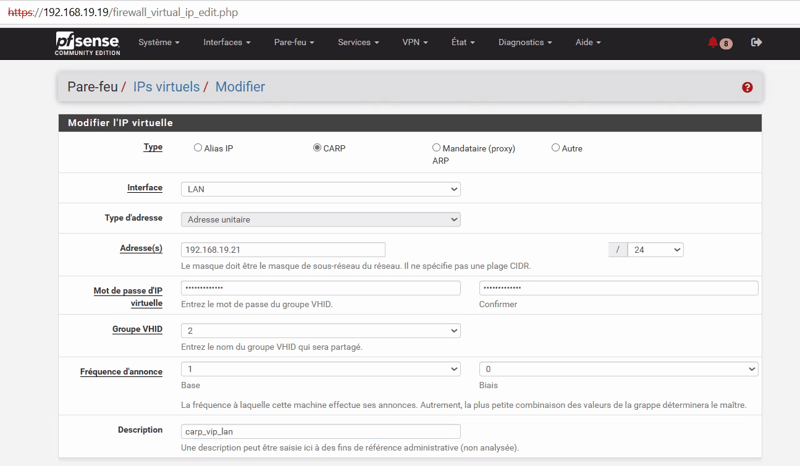
VIP CARP du LAN : 192.168.19.21/24
Cliquer sur Save, puis sur Apply Changes après chaque VIP.
Comprendre VHID, Base et Skew
- Le VHID identifie un groupe CARP sur un réseau. Il sert aussi à fabriquer l'adresse MAC virtuelle de la VIP,
00:00:5e:00:01:<VHID>. Deux clusters différents installés sur le même réseau doivent donc utiliser des VHID différents. pfSense propose automatiquement un numéro libre sur ce pare-feu, mais il ignore les VHID utilisés par d'autres équipements du réseau : c'est à l'administrateur de s'en assurer. - Base est l'intervalle entre deux annonces, en secondes. Skew (biais) ajoute un léger retard, en 256e de seconde. Le pare-feu dont les annonces sont les plus fréquentes gagne : avec un skew de 0, le primaire est prioritaire.
- Lors de la réplication vers le secondaire, pfSense ajoute automatiquement 100 au skew. Le secondaire annonce donc moins souvent et reste BACKUP. Le lab le confirme : la VIP du secondaire affiche
advskew 100. - Le BACKUP se déclare MASTER s'il ne reçoit plus d'annonce pendant environ 3 × Base + Skew/256 secondes, soit à peu près 3,4 s ici.
La réplication vers le secondaire est automatique, mais il faut aller la vérifier dans Firewall > Virtual IPs sur le secondaire.
12. Faire sortir le trafic avec la VIP (NAT sortant)¶
Le NAT sortant réécrit l'adresse source des paquets qui quittent le LAN vers le WAN. Par défaut (mode Automatic), pfSense utilise l'adresse propre de son interface WAN : 192.168.8.19 sur le primaire, 192.168.8.20 sur le secondaire. Dans un cluster, c'est un problème. Les serveurs distants répondent à l'adresse propre du primaire (192.168.8.19). Après une bascule, ces réponses partent donc vers un pare-feu en panne, et le secondaire ne les reçoit pas : d'après la documentation de Netgate, un trafic adressé directement à un nœud, et non à une VIP, n'est jamais repris par les autres nœuds.
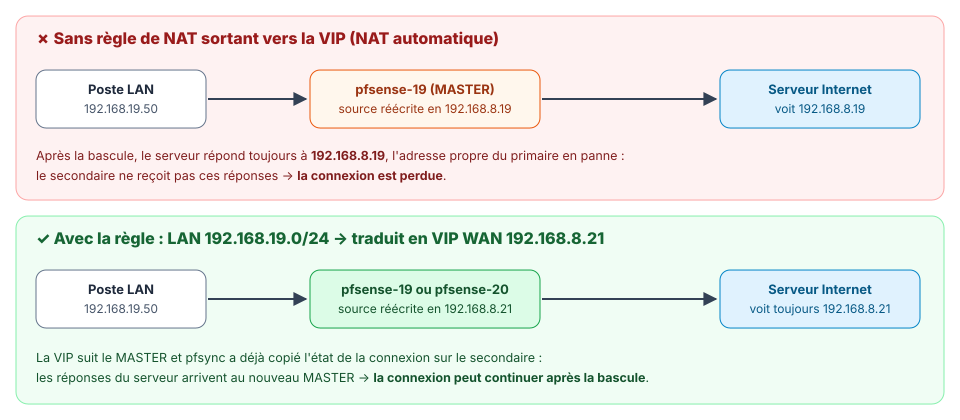
Et dans ce lab ?
Ici, l'hyperviseur ajoute lui-même un second NAT entre le réseau 192.168.8.0/24 et Internet. Le principe reste celui d'une vraie installation, où l'interface WAN porte des adresses publiques fournies par l'opérateur.
Sur le primaire, ouvrir Firewall > NAT > Outbound (Pare-feu > NAT > Sortant), puis :
- Sélectionner Hybrid Outbound NAT rule generation (Automatic Outbound NAT + rules below), puis cliquer sur Save. Le mode hybride conserve les règles automatiques et y ajoute les règles manuelles.
-
Dans Mappings, cliquer sur Add et renseigner :
Champ Valeur Interface WANAddress Family IPv4Protocol anySource Network or Alias:192.168.19.0/24Destination AnyTranslation — Address 192.168.8.21 (carp_vip_wan)Description utilisation vip sur l'interface wan -
Cliquer sur Save, puis sur Apply Changes.
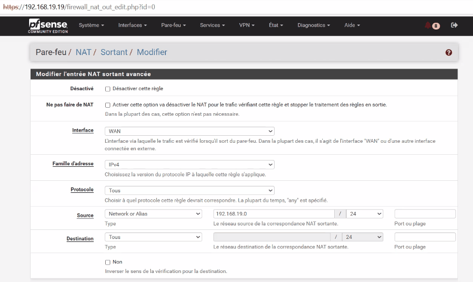
Règle de NAT sortant : interface WAN, source 192.168.19.0/24
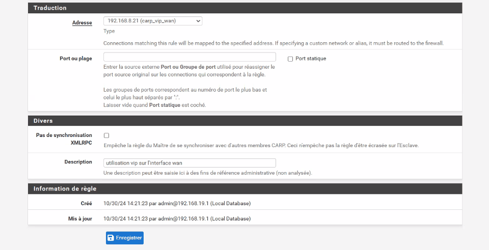
Suite de la règle : traduction vers la VIP 192.168.8.21
La règle est dupliquée automatiquement sur le secondaire.
Les quatre modes de NAT sortant
- Automatic : pfSense génère seul les règles, avec l'adresse de l'interface.
- Hybrid : règles automatiques plus règles manuelles, prioritaires.
- Manual : uniquement les règles écrites à la main.
- Disabled : pas de NAT sortant.
Le mode hybride est le plus simple pour un cluster : seul le trafic du LAN est traduit vers la VIP, et le reste ne change pas. C'est aussi le choix de la recette officielle de Netgate.
13. Vérifier la bascule¶
13.1 Contrôler l'état normal¶
Ouvrir Status > CARP (failover) (État > CARP (basculement)) sur chaque pare-feu.
-
Le primaire (
.19) affiche MASTER pour les deux VIP :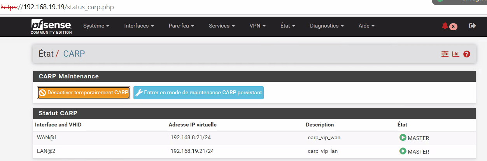
Primaire — les deux VIP en MASTER
-
Le secondaire (
.20) affiche BACKUP :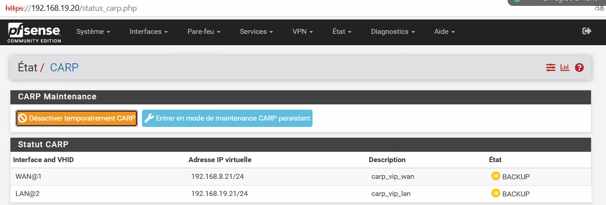
Secondaire — les deux VIP en BACKUP
La même page vérifie aussi pfsync. Sa section State Synchronization Status liste les identifiants des nœuds qui ont créé des états (State Creator Host IDs). Quand la synchronisation des états fonctionne dans les deux sens, la liste est identique sur les deux pare-feux et contient les deux identifiants. Si un nœud n'affiche que le sien, revoir l'étape 10.5.
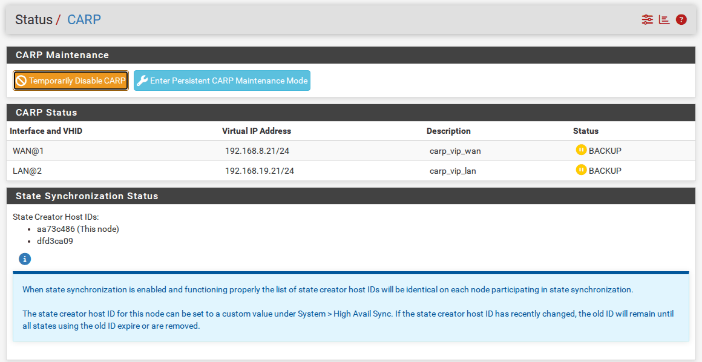
État > CARP : section State Synchronization Status, avec les identifiants des deux nœuds
« DISABLED » juste après une synchronisation
Juste après la création des VIP, la page du secondaire peut afficher brièvement DISABLED. Il suffit de la recharger quelques secondes plus tard pour voir BACKUP.
13.2 Simuler une panne du primaire et mesurer la coupure¶
-
Sur le PC hôte, lancer un ping continu vers la VIP LAN :
-
Sur le primaire, simuler une panne au choix :
- dans Status > CARP (failover), cliquer sur le bouton orange Temporarily Disable CARP (Désactiver temporairement CARP) ;
- ou, dans les paramètres de la VM, déconnecter la carte réseau du LAN ;
- ou éteindre la VM.
- Observer le ping : quelques réponses manquent, puis il reprend tout seul.
- Sur le secondaire, actualiser Status > CARP (failover) : les deux VIP sont passées en MASTER. Le cluster à basculement fonctionne.
- Ouvrir
https://192.168.19.21dans le navigateur et se connecter : c'est le secondaire qui répond. Une fois connecté, le nompfsense-20.home.arpaapparaît dans le titre de l'onglet et sur le tableau de bord. La page de connexion, elle, n'affiche pas le nom du pare-feu. - Rétablir le primaire : bouton Enable CARP, carte reconnectée ou VM rallumée. Le primaire reprend automatiquement le rôle de MASTER : c'est la préemption.
Résultat attendu
Dans le lab de test, la bascule a coupé le ping pendant environ 3,4 secondes (17 réponses perdues avec un ping toutes les 0,2 s). C'est exactement le délai théorique de CARP : 3 × 1 s + 100/256 s. Aucun réglage n'a été nécessaire sur le PC hôte.
14. Exercices¶
Réaliser les exercices suivants et faire une capture d'écran de chaque résultat. 🛟 Prendre un instantané des deux VM avant de commencer.
Exercice 1¶
Tester si une règle de pare-feu créée sur le secondaire se réplique sur le primaire.
Réponse
Non. La synchronisation XML-RPC est à sens unique, du primaire vers le secondaire. Le secondaire n'a aucun paramètre XML-RPC renseigné : il ne pousse rien.
Exercice 2¶
Faire basculer le secondaire en MASTER en éteignant le primaire, puis vérifier qu'il a bien récupéré le statut MASTER. Créer une règle de pare-feu sur ce secondaire devenu MASTER. Rallumer le primaire et vérifier qu'il récupère le statut MASTER. A-t-il récupéré la règle créée sur le secondaire pendant que ce dernier était MASTER ?
Réponse
Non. Le primaire redevient MASTER grâce à la préemption, mais ne récupère pas la règle. Les rôles CARP (MASTER/BACKUP) et le sens de la synchronisation XML-RPC sont indépendants : même MASTER, le secondaire ne pousse jamais sa configuration. Il ne faut donc jamais modifier la configuration sur le secondaire, même en cas de panne prolongée du primaire, sauf pour une urgence suivie d'une reprise manuelle sur le primaire.
Exercice 3¶
À la suite de l'exercice précédent, vérifier si l'absence, sur le primaire, de la règle créée sur le secondaire a entraîné la suppression de cette règle sur le secondaire.
Réponse
Oui, mais à la prochaine synchronisation, pas au redémarrage du primaire. Dans le lab de test, la règle était encore présente sur le secondaire juste après le retour du primaire. Elle a disparu dès qu'une synchronisation a eu lieu : une modification quelconque sur le primaire, ou Status > Filter Reload > Force Config Sync.
L'explication est la même que pour ha-user : XML-RPC remplace la section « règles » du secondaire par celle du primaire, et ne fusionne rien. Tout ce qui n'existe que sur le secondaire est perdu.
Exercice 4¶
Simuler une panne de l'interface WAN du MASTER (déconnecter sa carte WAN dans les paramètres de la VM) et vérifier si le WAN du secondaire a bien récupéré le statut MASTER. Vérifier également le statut de l'interface LAN du secondaire : est-il passé en MASTER ?
Réponse
Non (avec la configuration réalisée jusqu'ici). Le WAN du secondaire passe bien MASTER, mais le LAN du primaire garde le statut MASTER. Les deux pare-feux se partagent alors les rôles : les postes du LAN envoient toujours leur trafic au primaire, dont le WAN est coupé, et perdent l'accès à l'extérieur.
Ce n'est pas un défaut de pfSense : c'est la conséquence d'un réglage laissé par l'assistant, que l'exercice 5 permet de corriger.
Explication (vérifiée dans le lab de test). En théorie, pfSense active la préemption CARP (net.inet.carp.preempt=1). Quand une interface portant une VIP perd son lien, le pare-feu se rétrograde (demotion +240) sur toutes ses VIP, et le secondaire prend tout. Le journal système montre d'ailleurs que la VIP LAN bascule dans un premier temps. Mais l'assistant a laissé l'IPv6 du WAN en DHCP6. pfSense considère alors le WAN comme une interface dynamique et, à la perte du lien, il la « démonte » entièrement, VIP comprise. La VIP ayant disparu, la rétrogradation est annulée (carp: demoted by -240 to 0 (vhid removed)), et le primaire reprend la VIP LAN.
Exercice 5 — Corriger le comportement de l'exercice 4¶
Sur les deux pare-feux, ouvrir Interfaces > WAN, régler IPv6 Configuration Type sur None, puis Save et Apply Changes. La configuration des interfaces n'est pas synchronisée : il faut le faire sur chaque nœud. Refaire ensuite l'exercice 4. Que se passe-t-il ?
Réponse
Cette fois, les deux VIP passent MASTER sur le secondaire. Sur le primaire, la VIP WAN est en INIT (lien absent) et la VIP LAN en BACKUP ; sysctl net.inet.carp.demotion affiche 240. Le WAN étant désormais entièrement statique, pfSense ne démonte plus l'interface et la rétrogradation reste en place.
Au retour du lien WAN, le primaire reprend automatiquement les deux VIP. Dans le lab de test, un ping continu vers la VIP LAN n'a perdu aucun paquet pendant toute l'opération.
15. Pour aller plus loin¶
15.1 Agréger deux liens de synchronisation (LAGG/LACP)¶
Le Link Aggregation Control Protocol (LACP, norme IEEE 802.3ad) est un protocole de niveau 2 du modèle OSI. Il regroupe plusieurs ports physiques en une seule voie logique, appelée LAGG (Link AGGregation) dans pfSense.
L'agrégat offre deux avantages :
- il additionne la capacité des liens : deux câbles de 1 Gbit/s offrent 2 Gbit/s au total ;
- il apporte de la redondance : si un câble ou un port tombe en panne, l'autre continue de transmettre le trafic sans interruption.
Attention : LACP répartit le trafic par flux, et une même conversation n'utilise qu'un seul lien à la fois. La synchronisation entre deux pare-feux ne gagne donc pas de débit. Son vrai bénéfice est la redondance : l'agrégat supprime le dernier point unique de défaillance du cluster. La même notion existe sous Linux : voir Configurer une agrégation de liens (Bonding/LACP) avec Netplan.
Ajouter une carte réseau et un second LAN segment¶
Sur chaque pare-feu (VM éteinte), ajouter une quatrième carte réseau. La placer dans un autre LAN segment que celui utilisé pour la synchronisation : on obtient ainsi deux « câbles » indépendants entre les pare-feux, un par interface de l'agrégat.
Deux liens de synchronisation, chacun dans son propre LAN segment
Un segment par lien
Les tests ont montré qu'utiliser le même LAN segment pour les deux interfaces de l'agrégat provoque un problème de connectivité. Chaque lien doit avoir son propre segment, comme deux câbles physiques distincts.
Créer les segments depuis VM > Settings… > Network Adapter > LAN Segments…. Sur les captures, la 3e carte est dans SYNCHRO-PFSENSE-1 et la nouvelle 4e carte dans SYNCHRO-PFSENSE-2.
VMware — 3ᵉ carte dans SYNCHRO-PFSENSE-1, 4ᵉ carte dans SYNCHRO-PFSENSE-2
Activer l'Adapter 4 en Réseau interne nommé SYNCHRO-PFSENSE-2, avec le type d'interface Intel PRO/1000 MT Desktop et le mode promiscuité « Tout autoriser ». L'Adapter 3 reste dans le réseau interne SYNCHRO-PFSENSE.
VirtualBox — 4ᵉ carte en réseau interne SYNCHRO-PFSENSE-2
Sauvegarder les règles de pare-feu existantes¶
La création du LAGG va supprimer l'interface PFSYNC et toutes ses règles. Il faut donc les sauvegarder d'abord, sur le primaire :
- Ouvrir Diagnostics > Backup & Restore (Diagnostics > Sauvegarde & Restauration).
- Dans l'onglet Backup & Restore, section Backup Configuration, choisir Backup area : Firewall Rules (ou toute la configuration).
- Cliquer sur Download configuration as XML. Un fichier XML est téléchargé sur le PC hôte.
Sauvegarde de la zone « Règles du pare-feu »
Le fichier XML de sauvegarde téléchargé par le navigateur
Créer le LAGG¶
Une interface ne peut entrer dans un LAGG que si elle n'est affectée à rien. Il faut donc d'abord supprimer l'interface PFSYNC actuelle. Cela supprime aussi toutes les règles de cette interface : il faudra les recréer, ou importer la sauvegarde.
-
Interfaces > Assignments (Interfaces > Affectations) : supprimer la ligne PFSYNC (bouton Delete).
Suppression de l'interface PFSYNC dans les affectations
-
Onglet LAGGs > Add : sélectionner les deux interfaces libres (Ctrl + clic), en les reconnaissant à leur adresse MAC. Choisir le protocole LACP, laisser les autres options par défaut, ajouter une description pertinente, puis Save.
Création du LAGG en mode LACP avec deux interfaces membres
Le LAGG créé
-
Onglet Interface Assignments : choisir
lagg0dans Available network ports, puis Add. -
Cliquer sur la nouvelle interface (
OPT1dans l'exemple) et la configurer : Enable coché, DescriptionPFSYNC, IPv4 statique192.168.254.1/30. Enregistrer, puis appliquer les changements.Affectation de l'interface LAGG
Configuration de l'interface LAGG : activée, nommée PFSYNC, IP statique
-
Répéter les mêmes étapes sur le secondaire, avec l'adresse
192.168.254.2.Secondaire — affectations avec l'interface LAGG
-
Vérifier dans System > High Avail. Sync que Synchronize Interface vaut toujours
PFSYNCsur les deux nœuds.
Restaurer les règles supprimées¶
- Sur le primaire, ouvrir Diagnostics > Backup & Restore, section Restore Backup.
- Restore area : Firewall Rules. Avec All, tout le contenu du fichier serait restauré.
- Configuration file : Parcourir… > le fichier XML exporté précédemment.
- Cliquer sur Restore Configuration et confirmer. pfSense applique les règles et redémarre les services nécessaires. Dans certains cas, un redémarrage du pare-feu est utile pour s'assurer que tout est bien appliqué.
- Sur le secondaire, vérifier la présence de la règle XML-RPC sur la nouvelle interface PFSYNC : ses anciennes règles ont été supprimées avec son interface. Si elle manque, la recréer comme à la partie 10.3 ; les autres règles arriveront ensuite par réplication.
Restauration de la zone « Règles du pare-feu »
Confirmation de la restauration
Restauration terminée
Firewall > Rules > PFSYNC (interface LAGG) : recréer les règles XML-RPC, pfsync et CARP de la partie 10.3. La règle XML-RPC doit être recréée aussi sur le secondaire, sinon le primaire ne peut plus lui parler. Les règles du secondaire peuvent servir de modèle. Puis Apply Changes.
Vérifier¶
Sur le primaire, créer une règle de pare-feu quelconque, par exemple sur l'interface WAN :
Primaire — règle de test sur le WAN
Elle doit apparaître automatiquement sur le secondaire :
Secondaire — la règle de test est arrivée par réplication
15.2 Ajouter un troisième nœud au cluster¶
Il est possible d'ajouter un troisième pare-feu au cluster, en conservant la synchronisation sur les trois nœuds. La méthode éprouvée consiste à chaîner la synchronisation :
- Configurer le troisième pare-feu (
pfsense-22par exemple) avec ses deux VIP, comme expliqué à la partie 11. - Sur le secondaire (ni le primaire, ni le tertiaire), dans System > High Avail. Sync, remplir la partie XML-RPC pour qu'il synchronise le tertiaire. Le secondaire devient ainsi le « maître » du tertiaire.
- Configurer le tertiaire comme le secondaire l'a été pour le primaire : utilisateur
ha-user, règles, pfsync.
Points d'attention
- Le réseau de synchronisation en
/30ne peut contenir que deux adresses. Le lien entre le secondaire et le tertiaire demande donc un autre réseau dédié (par exemple192.168.254.4/30sur un nouveau LAN segment) et une carte réseau supplémentaire sur le secondaire. - pfSense ajoute 100 au skew des VIP à chaque synchronisation XML-RPC (vérifié entre le primaire et le secondaire). Le tertiaire devrait donc recevoir un skew de 200 et être le dernier à prendre la main. Ce chaînage n'a pas été rejoué dans le lab de test.
15.3 Mettre à jour le cluster vers pfSense CE 2.9.0¶
pfSense CE 2.7.2 (décembre 2023) n'est plus maintenue. À la date de rédaction, la version courante est la 2.9.0 (20 août 2026), basée sur FreeBSD 16. Mettre à jour un cluster est un savoir-faire à part entière : bien menée, l'opération se fait sans interruption de service. Dans le lab de test, aucun ping vers la VIP n'a été perdu lors des changements de rôle planifiés.
Ce qu'il faut savoir avant de commencer (constaté dans le lab de test)
- Deux sauts sont nécessaires. Sur une 2.7.2, la page de mise à jour ne propose que la 2.8.1, et la 2.9.0 n'apparaît qu'une fois en 2.8.1. Chaque nœud passe donc par 2.7.2 → 2.8.1 → 2.9.0.
- Internet est indispensable, et le téléchargement est long : 187 paquets pour passer en 2.8.1, puis 184 pour passer en 2.9.0. Dans le lab, chaque saut a pris de 25 minutes à 1 heure par nœud, selon la charge des serveurs de Netgate. L'installation et les redémarrages ne durent que 3 à 4 minutes ; tout le reste est du téléchargement.
- 2 Go de RAM par VM. Avec 1 Go, la mise à jour a réussi sur le secondaire mais a échoué sur le primaire : le système a tué le processus d'installation par manque de mémoire, et pfSense est resté inutilisable (voir le dépannage ci-dessous). L'échec n'est donc pas systématique, mais le risque est réel. Avec 2 Go, les deux sauts du primaire se sont déroulés sans erreur.
- Tant que les versions diffèrent, la synchronisation XML-RPC se suspend d'elle-même. Le journal système du primaire l'indique : « The other member is on a different configuration version of pfSense. Sync will not be done to prevent problems! ». Il ne faut donc rien modifier pendant la mise à jour, car les changements ne seraient pas recopiés.
- Les états pfsync passent toujours vers le nœud mis à jour. Un secondaire en 2.9.0 importait encore les états envoyés par un primaire en 2.7.2 ; l'inverse ne fonctionnait plus. Au moment de basculer vers le secondaire mis à jour, celui-ci dispose donc bien des états des connexions en cours.
Étape 1 — Sauvegarder les deux nœuds et prévoir 2 Go de RAM¶
Sur chaque pare-feu, ouvrir Diagnostics > Backup & Restore, laisser Backup area sur All, puis cliquer sur Download configuration as XML. 🛟 Prendre aussi un instantané des deux VM : en cas d'échec, c'est le moyen le plus rapide de revenir en arrière.
Si les VM ont été créées avec 1 Go, éteindre le secondaire (console : option 6) Halt system), porter sa mémoire à 2 Go dans les paramètres de la VM, puis le rallumer. Comme il est BACKUP, le service n'est pas affecté. Le primaire sera traité à l'étape 3, une fois en maintenance.
Étape 2 — Mettre à jour le secondaire (2.7.2 → 2.8.1 → 2.9.0)¶
Sur le secondaire :
-
Ouvrir System > Update (Système > Mettre à jour), onglet Update Settings (Paramètres de mise à jour). Choisir Branch : Previous Stable Version (2.8.1), puis Save.
Paramètres de mise à jour : branche 2.8.1
-
Onglet System Update (Mise à jour système) : patienter jusqu'à ce que Latest Base System (Dernier système de base) affiche
2.8.1. L'état « Retrieving » peut durer une à deux minutes.Mise à jour système : 2.7.2 installée, 2.8.1 disponible
Le message « pfSense-repoc: … no pfSense packages installed »
Ce message apparaît dans la zone Messages sur une pfSense CE fraîchement installée. Il est sans conséquence : dans le lab, la mise à jour a fonctionné malgré lui sur les deux nœuds.
-
Cliquer sur Confirm. La page affiche la progression du téléchargement. Dans la console, la suite se déroule ainsi :
- le message « System is going to be upgraded. Rebooting in … seconds » annonce un premier redémarrage ;
- le nouveau FreeBSD et les paquets s'installent pendant deux à trois minutes ;
- le message « Rebooting now » annonce un second redémarrage, et la console affiche
net.inet.carp.allow: 1 -> 0: pfSense désactive CARP avant de s'arrêter ; - le menu habituel revient.
Ne pas éteindre la VM pendant cette phase. Des messages inquiétants peuvent défiler, comme « POST-INSTALL script failed » ou « missing file ». Dans le lab, ils étaient sans conséquence.
-
Vérifier la bannière de la console,
*** Welcome to pfSense 2.8.1-RELEASE ***, et, dans Status > CARP (failover), que le secondaire est toujours BACKUP. - Recommencer avec Branch : Current Stable Version (2.9.0). Cette option n'apparaît qu'en 2.8.1. Cliquer sur Save, puis sur System Update > Confirm.
-
Vérifier la bannière
2.9.0-RELEASEet l'état BACKUP.Console du secondaire après la mise à jour en 2.9.0
Étape 3 — Placer le primaire en maintenance CARP¶
Sur le primaire, ouvrir Status > CARP (failover) et cliquer sur Enter Persistent CARP Maintenance Mode (Entrer en mode de maintenance CARP persistant).
Primaire en maintenance CARP : ses VIP sont en BACKUP
Ce mode règle le skew de toutes les VIP du primaire à 254 (advskew 254 dans ifconfig). Le secondaire, dont les annonces sont désormais plus fréquentes, devient MASTER. La bascule est planifiée : au lieu de disparaître brutalement, le primaire annonce sa nouvelle priorité, plus faible. Le secondaire prend donc le relais immédiatement, sans attendre le délai de détection d'une panne (environ 3,4 s). Dans le lab de test, aucun ping vers la VIP n'a été perdu.
Contrairement à Temporarily Disable CARP, ce mode persiste après un redémarrage. Si le primaire n'a que 1 Go, l'éteindre maintenant, lui donner 2 Go et le rallumer : dans le lab, il est bien resté BACKUP au redémarrage, sans aucune perte de ping.
Étape 4 — Mettre à jour le primaire¶
Sur le primaire, refaire les deux sauts de l'étape 2 (2.8.1, puis 2.9.0). Pendant ce temps, le secondaire assure seul le service.
Étape 5 — Sortir du mode de maintenance¶
Sur le primaire, dans Status > CARP (failover), cliquer sur Leave Persistent CARP Maintenance Mode (Quitter le mode de maintenance CARP persistant). Le primaire redevient MASTER grâce à la préemption ; dans le lab, sans perte de ping.
Vérifications finales
- Les deux consoles affichent
pfSense 2.9.0-RELEASE. - Le primaire est MASTER et le secondaire BACKUP sur les deux VIP.
- La synchronisation XML-RPC a repris : une règle de test créée sur le primaire apparaît sur le secondaire, et sa suppression est elle aussi répliquée. Dans le lab, en 2.9.0, une synchronisation réussie n'a ajouté aucune ligne au journal système : ce test est donc la vérification la plus fiable.
- Dans Status > CARP (failover), la section State Synchronization Status liste les deux mêmes identifiants sur les deux nœuds (voir l'étape 13.1) : pfsync fonctionne de nouveau dans les deux sens.
- Si le navigateur affiche un nouvel avertissement de certificat, c'est que pfSense a recréé le certificat de son interface web. Dans le lab, c'est arrivé au secondaire lors de sa mise à jour, mais pas au primaire. Il suffit d'accepter le nouveau certificat.
Dépannage de la mise à jour¶
La page indique toujours 2.7.2, « Your system is up to date » ou « Unable to check for updates »
Ces trois cas ont été rencontrés dans le lab, juste après un changement de branche. Les actions suivantes ont permis d'en sortir :
- Retourner dans Update Settings, vérifier la branche et cliquer de nouveau sur Save.
- Dans Diagnostics > Command Prompt, lancer
pfSense-upgrade -c. La commande doit répondre2.8.1 version of pfSense is available, ou indiquer la version visée. - Recharger la page System Update.
Le message « Another instance of pfSense-upgrade is running » signifie qu'une vérification est déjà en cours : patienter quelques minutes, puis recharger.
Après le redémarrage, la console affiche php: not found et une invite login:
C'est le symptôme rencontré avec 1 Go de RAM. La console affiche notamment :
/etc/rc.bootup: not foundetpfSense-upgrade: php: not found;- une invite
FreeBSD/amd64 (Amnesiac) (ttyv0) login:à la place du menu ; - une interface web injoignable.
La commande dmesg (connexion en root avec le mot de passe admin) montre pkg-static … was killed: failed to reclaim memory. L'installation a été interrompue à mi-chemin : le nouveau FreeBSD est en place, mais pas les paquets de pfSense.
Solution appliquée dans le lab : restaurer l'instantané de l'étape 1, porter la RAM à 2 Go, puis recommencer la mise à jour. Sans instantané, il faut réinstaller pfSense et restaurer la sauvegarde config.xml de l'étape 1. Cette seconde méthode n'a pas été rejouée dans le lab.
Netgate propose aussi l'option 13) Update from console, qui lance la même mise à jour en mode texte, et des commandes de réparation (pkg-static clean -ay; pkg-static install -fy pkg pfSense-repo pfSense-upgrade) dans sa page Troubleshooting upgrades. Ces deux possibilités n'ont pas été nécessaires dans le lab de test.
16. Dépannage et astuces¶
16.1 Les deux pare-feux sont MASTER en même temps¶
C'est le symptôme le plus courant. On parle de « split-brain » : chaque nœud croit être seul, car il n'entend pas les annonces de l'autre. Vérifier dans l'ordre :
- Les deux cartes WAN (et les deux cartes LAN) sont-elles bien dans le même réseau virtuel ? Sous VirtualBox, le mode NAT simple isole chaque VM : utiliser Réseau NAT.
- Sous VirtualBox, le mode promiscuité est-il réglé sur Tout autoriser ?
- Les VIP ont-elles bien été répliquées sur le secondaire, avec le même VHID et le même mot de passe ?
16.2 Pas de ping entre les deux pare-feux¶
Ouvrir Status > System Logs > Firewall (État > Journaux système > Pare-feu) pour retrouver le blocage du protocole ICMP, puis créer une règle rapide avec le bouton + (Easy Rule).
Journal du pare-feu : ICMP bloqué ; le bouton + crée une règle rapide
16.3 Pas de ping vers la passerelle¶
- Désactiver puis réactiver la carte réseau virtuelle du VMnet concerné sur le PC hôte Windows (raccourci
ncpa.cpl). - Supprimer le VMnet concerné, appliquer les changements, puis le recréer à l'identique.
- Redémarrer les pfSense.
-
En dernier recours, et uniquement pour diagnostiquer, créer une règle flottante (Firewall > Rules > Floating) qui autorise tout trafic sur toutes les interfaces, puis vérifier si la passerelle est toujours injoignable. Si elle répond, le problème vient des règles ; sinon, il vient du réseau virtuel. Supprimer cette règle après le test.
Règle flottante de diagnostic autorisant tout le trafic, à supprimer après le test
16.4 Accéder à l'interface web par le WAN, temporairement, en ligne de commande¶
Pour administrer un pare-feu par son interface WAN, la commande suivante désactive complètement le filtrage. Elle se tape dans le shell pfSense, option 8) Shell de la console :
L'interface web est alors accessible depuis le WAN. Cet accès est à usage unique : à la prochaine modification de configuration, pfSense réactive le filtrage et il faut relancer la commande.
Le pare-feu ne filtre plus rien
Tant que pfctl -d est actif, le pare-feu laisse tout passer. À n'utiliser que dans un lab, le temps d'une manipulation. La commande pfctl -e réactive le filtrage.
16.5 Accéder à l'interface web par le WAN avec une règle permanente¶
À ne jamais faire en production
Exposer l'interface d'administration côté WAN est un trou de sécurité majeur. Ces manipulations ne sont acceptables que dans un lab isolé.
Avec une règle de filtrage : ouvrir Firewall > Rules > WAN, puis Add. Il existe deux boutons Add : l'un ajoute la règle en haut de la liste, l'autre en bas, et les règles s'appliquent de haut en bas. Renseigner :
| Champ | Valeur |
|---|---|
| Action | Pass |
| Interface | WAN |
| Address Family | IPv4 |
| Protocol | TCP |
| Source | any (ou un hôte ou réseau précis, ce qui est préférable) |
| Destination | WAN address |
| Destination port range | HTTPS (443), ou HTTP (80) si l'interface web a été repassée en HTTP |
Cliquer sur Save, puis sur Apply Changes. Pour désactiver la règle plus tard, cliquer sur la coche verte (la règle devient grisée), puis appliquer.
Règle WAN vers l'adresse WAN du pare-feu. Sur cette capture, l'interface web était servie en HTTP, d'où le port 80.
Dans ce lab, l'ordinateur qui se connecte côté WAN a une adresse privée. La règle ne fonctionne donc que si la case Block RFC1918 Private Networks est décochée, comme demandé dans l'assistant (étape 8.2) : le blocage des réseaux privés est évalué avant les règles écrites à la main. Si la case est cochée, la décocher dans Interfaces > WAN, section Reserved Networks, puis appliquer.
Interfaces > WAN : case de blocage des réseaux privés
Tableau de bord ouvert depuis l'adresse WAN
Avec une redirection de port (PAT) : une règle de Firewall > NAT > Port Forward peut aussi rediriger un port du WAN vers l'interface web.
Redirection de port du WAN vers l'interface web (ici en HTTP, port 80)
16.6 Une règle a disparu du secondaire¶
C'est normal si elle avait été créée sur le secondaire : la synchronisation suivante l'a effacée (voir l'exercice 3). Toute modification se fait sur le primaire.
16.7 Passer le clavier de la console en AZERTY¶
Temporairement, jusqu'au prochain redémarrage : au menu de la console, choisir 8) Shell et saisir :
Le clavier étant encore en QWERTY pendant la saisie, il faut taper :
| Pour obtenir | Appuyer sur |
|---|---|
- |
touche ) |
m |
touche , |
/ |
touche ! |
a |
touche q |
. |
touche : (sans majuscule) |
De façon permanente : installer le paquet Shellcmd. Ouvrir System > Package Manager > Available Packages (Système > Gestionnaire de paquets > Paquets disponibles), installer Shellcmd, puis ouvrir Services > Shellcmd > Add :
| Champ | Valeur |
|---|---|
| Command | kbdcontrol -l /usr/share/syscons/keymaps/fr.iso.kbd |
| Shellcmd Type | shellcmd |
| Description | clavier azerty |
Au prochain redémarrage, la console utilisera le clavier français.
17. Aide-mémoire¶
| Action | Menu ou commande |
|---|---|
| Affecter les interfaces | Console : 1) Assign Interfaces |
| Changer l'adresse IP d'une interface | Console : 2) Set interface(s) IP address — ou Interfaces > nom |
| Configurer la haute disponibilité | System > High Avail. Sync (Système > High Availability) |
| Gérer les utilisateurs | System > User Manager (Système > Gestionnaire d'usagers) |
| Règles de filtrage | Firewall > Rules > interface — toujours Apply Changes ensuite |
| Créer une VIP | Firewall > Virtual IPs (Pare-feu > IPs virtuels) |
| NAT sortant | Firewall > NAT > Outbound (Pare-feu > NAT > Sortant) |
| État MASTER/BACKUP, maintenance | Status > CARP (failover) (État > CARP (basculement)) |
| Forcer la synchronisation (primaire) | Status > Filter Reload > Force Config Sync |
| Journaux du pare-feu | Status > System Logs > Firewall |
| Tester la connectivité | Diagnostics > Ping (choisir l'adresse source) |
| Lancer une commande shell | Diagnostics > Command Prompt — ou console 8) Shell |
| Sauvegarder / restaurer | Diagnostics > Backup & Restore |
| Mettre à jour | System > Update — ou console 13) Update from console |
| Voir l'état CARP d'une interface | ifconfig em1 \| grep carp |
| Voir la rétrogradation CARP | sysctl net.inet.carp.demotion |
| Compter les états par nœud créateur | pfctl -vvss \| grep -o "creatorid: [0-9a-f]*" \| sort \| uniq -c |
18. Glossaire¶
- ARP gratuit
- Message ARP qu'un équipement envoie spontanément pour annoncer « cette adresse IP est désormais chez moi ». Le nouveau MASTER l'utilise pour que les switches et les postes mettent à jour leurs tables immédiatement.
- BACKUP / MASTER
- États d'une VIP CARP. Le MASTER possède la VIP et répond au trafic ; le BACKUP attend et surveille les annonces du MASTER.
- CARP
- Common Address Redundancy Protocol. Protocole qui permet à un groupe d'hôtes d'un même segment réseau de partager une adresse IP. Il sert à la tolérance de panne de routeurs, et parfois à la répartition de charge, sans protocole de routage dynamique. C'est une alternative libre et sécurisée aux protocoles VRRP (Virtual Router Redundancy Protocol), HSRP (Hot Standby Router Protocol) et FSRP, créée pour contourner des brevets.
- Cluster
- Ensemble de serveurs ou d'équipements, appelés nœuds, qui travaillent ensemble pour fournir un service unique. Le cluster agit comme une seule unité, ce qui améliore la fiabilité et parfois les performances.
- Failover (basculement)
- Mécanisme qui bascule automatiquement d'un système défaillant vers un système de secours, sans interruption de service ou avec une interruption minimale.
- HA (High Availability, haute disponibilité)
- Capacité d'un système à fonctionner en continu avec un minimum d'interruptions. Elle s'obtient par la redondance, la réplication des données et des procédures de basculement.
- LACP / LAGG
- Link Aggregation Control Protocol (IEEE 802.3ad) : protocole de niveau 2 qui regroupe plusieurs ports Ethernet en un seul lien logique, de plus grande capacité totale et redondant. Le trafic est réparti par flux. Dans pfSense, l'interface résultante s'appelle un LAGG.
- NAT sortant
- Traduction de l'adresse source des paquets qui sortent d'un réseau, par exemple du LAN vers le WAN. Dans un cluster, elle doit utiliser la VIP WAN.
- NIC
- Network Interface Controller : carte réseau, physique ou virtuelle.
- pfsync
- Protocole qui synchronise la table d'états entre plusieurs machines exécutant le pare-feu Packet Filter. Il diffuse les états des connexions actives entre les nœuds du cluster, pour que le nœud de secours les connaisse au moment d'une bascule. Il fonctionne par défaut en multicast, mais une adresse de pair (syncpeer) permet d'envoyer les paquets directement au nœud voulu, comme dans ce TP.
- Préemption
- Capacité d'un nœud prioritaire à reprendre le rôle de MASTER dès qu'il redevient disponible. Elle est activée par défaut dans pfSense.
- Redondance
- Ajout de composants ou de systèmes de secours pour assurer la continuité de service en cas de défaillance.
- Rétrogradation (demotion)
- Pénalité ajoutée par CARP à toutes les VIP d'un nœud quand l'une de ses interfaces tombe. Le nœud devient moins prioritaire, et l'ensemble des VIP bascule vers l'autre nœud.
- Skew (biais)
- Retard ajouté aux annonces CARP d'un nœud. Plus il est faible, plus le nœud est prioritaire. pfSense ajoute 100 au skew sur le secondaire.
- Split-brain
- Situation anormale où plusieurs nœuds se croient MASTER en même temps, ou se partagent les VIP de façon incohérente.
- Table d'états
- Liste des connexions en cours, mémorisée par un pare-feu à états. Grâce à elle, les réponses d'une connexion autorisée passent sans règle supplémentaire.
- VHID
- Virtual Host ID. Numéro d'un groupe CARP sur un réseau. Il détermine l'adresse MAC virtuelle
00:00:5e:00:01:<VHID>. - VIP
- Virtual IP. Adresse IP virtuelle partagée par les nœuds du cluster et portée par le MASTER.
- XML-RPC
- Protocole d'appel de procédure à distance (Remote Procedure Call) qui transporte des données structurées en XML sur HTTP. Il a été publié en 1998 par Dave Winer (UserLand Software) avec Microsoft. pfSense l'utilise pour répliquer la configuration du primaire vers le secondaire.
19. Ressources¶
- Netgate — Configuring High Availability (recette complète) — La procédure de référence de l'éditeur.
- Netgate — High Availability : vue d'ensemble — CARP, pfsync, XML-RPC et leurs exigences.
- Netgate — Configuration synchronization (XML-RPC) — Ce qui est synchronisé, et ce qui ne l'est pas.
- Netgate — State synchronization (pfsync) — Fonctionnement et règles nécessaires.
- Netgate — Upgrading a High Availability Cluster — Ordre officiel de mise à jour.
- Netgate — CARP Status — Désactivation temporaire et mode de maintenance.
- Netgate — High Availability in virtual environments — Réglages des hyperviseurs (mode promiscuité).
- Netgate — Troubleshooting upgrades — Que faire si la mise à jour échoue.
- Netgate — Notes de version pfSense CE 2.9.0
- Netgate — LAGG Interfaces
- Oracle — Modes réseau de VirtualBox
- FreeBSD — page de manuel carp(4) — Fonctionnement détaillé de CARP, préemption et rétrogradation.
- Wikipédia : Basculement (informatique), Haute disponibilité, CARP, pfsync, XML-RPC, IEEE 802.3ad